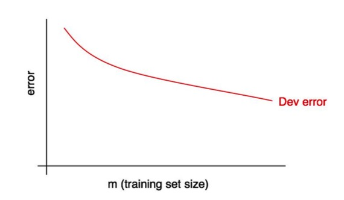
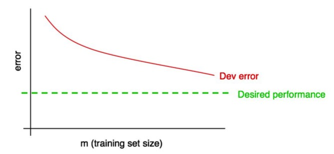

<!DOCTYPE HTML>
<html lang="en" class="sidebar-visible no-js light">
    <head>
        <!-- Book generated using mdBook -->
        <meta charset="UTF-8">
        <title>Machine Learning Yearning</title>
        <meta name="robots" content="noindex" />


        <!-- Custom HTML head -->
        
        <meta content="text/html; charset=utf-8" http-equiv="Content-Type">
        <meta name="description" content="">
        <meta name="viewport" content="width=device-width, initial-scale=1">
        <meta name="theme-color" content="#ffffff" />

        <link rel="icon" href="favicon.svg">
        <link rel="shortcut icon" href="favicon.png">
        <link rel="stylesheet" href="css/variables.css">
        <link rel="stylesheet" href="css/general.css">
        <link rel="stylesheet" href="css/chrome.css">
        <link rel="stylesheet" href="css/print.css" media="print">

        <!-- Fonts -->
        <link rel="stylesheet" href="FontAwesome/css/font-awesome.css">
        <link rel="stylesheet" href="fonts/fonts.css">

        <!-- Highlight.js Stylesheets -->
        <link rel="stylesheet" href="highlight.css">
        <link rel="stylesheet" href="tomorrow-night.css">
        <link rel="stylesheet" href="ayu-highlight.css">

        <!-- Custom theme stylesheets -->

    </head>
    <body>
        <!-- Provide site root to javascript -->
        <script type="text/javascript">
            var path_to_root = "";
            var default_theme = window.matchMedia("(prefers-color-scheme: dark)").matches ? "navy" : "light";
        </script>

        <!-- Work around some values being stored in localStorage wrapped in quotes -->
        <script type="text/javascript">
            try {
                var theme = localStorage.getItem('mdbook-theme');
                var sidebar = localStorage.getItem('mdbook-sidebar');

                if (theme.startsWith('"') && theme.endsWith('"')) {
                    localStorage.setItem('mdbook-theme', theme.slice(1, theme.length - 1));
                }

                if (sidebar.startsWith('"') && sidebar.endsWith('"')) {
                    localStorage.setItem('mdbook-sidebar', sidebar.slice(1, sidebar.length - 1));
                }
            } catch (e) { }
        </script>

        <!-- Set the theme before any content is loaded, prevents flash -->
        <script type="text/javascript">
            var theme;
            try { theme = localStorage.getItem('mdbook-theme'); } catch(e) { }
            if (theme === null || theme === undefined) { theme = default_theme; }
            var html = document.querySelector('html');
            html.classList.remove('no-js')
            html.classList.remove('light')
            html.classList.add(theme);
            html.classList.add('js');
        </script>

        <!-- Hide / unhide sidebar before it is displayed -->
        <script type="text/javascript">
            var html = document.querySelector('html');
            var sidebar = 'hidden';
            if (document.body.clientWidth >= 1080) {
                try { sidebar = localStorage.getItem('mdbook-sidebar'); } catch(e) { }
                sidebar = sidebar || 'visible';
            }
            html.classList.remove('sidebar-visible');
            html.classList.add("sidebar-" + sidebar);
        </script>

        <nav id="sidebar" class="sidebar" aria-label="Table of contents">
            <div class="sidebar-scrollbox">
                <ol class="chapter"><li class="chapter-item expanded affix "><a href="index.html">引言</a></li><li class="chapter-item expanded "><a href="chapter1.html"><strong aria-hidden="true">1.</strong> 机器学习策略的原因</a></li><li class="chapter-item expanded "><a href="chapter2.html"><strong aria-hidden="true">2.</strong> 如何使用本书来帮助您的团队</a></li><li class="chapter-item expanded "><a href="chapter3.html"><strong aria-hidden="true">3.</strong> 预备知识和注释</a></li><li class="chapter-item expanded "><a href="chapter4.html"><strong aria-hidden="true">4.</strong> 规模推动机器学习进步</a></li><li class="chapter-item expanded "><a href="chapter5.html"><strong aria-hidden="true">5.</strong> 您的开发和测试集</a></li><li class="chapter-item expanded "><a href="chapter6.html"><strong aria-hidden="true">6.</strong> 你的开发集和测试集应该来自相同的分布</a></li><li class="chapter-item expanded "><a href="chapter7.html"><strong aria-hidden="true">7.</strong> 开发集/测试集需要多大</a></li><li class="chapter-item expanded "><a href="chapter8.html"><strong aria-hidden="true">8.</strong> 为您的团队建立单一数字的评估指标以进行优化</a></li><li class="chapter-item expanded "><a href="chapter9.html"><strong aria-hidden="true">9.</strong> 优化指标和满足指标</a></li><li class="chapter-item expanded "><a href="chapter10.html"><strong aria-hidden="true">10.</strong> 通过开发集和评估标准加速迭代</a></li><li class="chapter-item expanded "><a href="chapter11.html"><strong aria-hidden="true">11.</strong> 何时更改开发/测试集和评估指标</a></li><li class="chapter-item expanded "><a href="chapter12.html"><strong aria-hidden="true">12.</strong> 小结：建立开发集和测试集</a></li><li class="chapter-item expanded "><a href="chapter13.html"><strong aria-hidden="true">13.</strong> 快速构建您的第一个系统，然后迭代</a></li><li class="chapter-item expanded "><a href="chapter14.html"><strong aria-hidden="true">14.</strong> 误差分析：查看开发集样本以评估想法</a></li><li class="chapter-item expanded "><a href="chapter15.html"><strong aria-hidden="true">15.</strong> 在误差分析期间并行评估多个想法</a></li><li class="chapter-item expanded "><a href="chapter16.html"><strong aria-hidden="true">16.</strong> 清理错误标注的开发和测试集样本</a></li><li class="chapter-item expanded "><a href="chapter17.html"><strong aria-hidden="true">17.</strong> 如果你有一个大的开发集，将其分成两个子集，只着眼于其中的一个</a></li><li class="chapter-item expanded "><a href="chapter18.html"><strong aria-hidden="true">18.</strong> Eyeball 和 Blackbox 开发集应该多大？</a></li><li class="chapter-item expanded "><a href="chapter19.html"><strong aria-hidden="true">19.</strong> 小贴士：基本误差分析</a></li><li class="chapter-item expanded "><a href="chapter20.html"><strong aria-hidden="true">20.</strong> 偏差和方差：误差的两大来源</a></li><li class="chapter-item expanded "><a href="chapter21.html"><strong aria-hidden="true">21.</strong> 偏差和方差的例子</a></li><li class="chapter-item expanded "><a href="chapter22.html"><strong aria-hidden="true">22.</strong> 比较最优错误率</a></li><li class="chapter-item expanded "><a href="chapter23.html"><strong aria-hidden="true">23.</strong> 处理偏差和方差</a></li><li class="chapter-item expanded "><a href="chapter24.html"><strong aria-hidden="true">24.</strong> 偏差和方差间的权衡</a></li><li class="chapter-item expanded "><a href="chapter25.html"><strong aria-hidden="true">25.</strong> 减少可避免偏差的方法</a></li><li class="chapter-item expanded "><a href="chapter26.html"><strong aria-hidden="true">26.</strong> 训练集上的误差分析</a></li><li class="chapter-item expanded "><a href="chapter27.html"><strong aria-hidden="true">27.</strong> 减少方差的方法</a></li><li class="chapter-item expanded "><a href="chapter28.html"><strong aria-hidden="true">28.</strong> 诊断偏差和方差：学习曲线</a></li><li class="chapter-item expanded "><a href="chapter29.html"><strong aria-hidden="true">29.</strong> 绘制训练误差曲线</a></li><li class="chapter-item expanded "><a href="chapter30.html"><strong aria-hidden="true">30.</strong> 解读学习曲线：高偏差</a></li><li class="chapter-item expanded "><a href="chapter31.html"><strong aria-hidden="true">31.</strong> 解释学习曲线：其他情况</a></li><li class="chapter-item expanded "><a href="chapter32.html"><strong aria-hidden="true">32.</strong> 绘制学习曲线</a></li><li class="chapter-item expanded "><a href="chapter33.html"><strong aria-hidden="true">33.</strong> 为何我们要与人类水平的表现作对比</a></li><li class="chapter-item expanded "><a href="chapter34.html"><strong aria-hidden="true">34.</strong> 如何定义人类水平的表现</a></li><li class="chapter-item expanded "><a href="chapter35.html"><strong aria-hidden="true">35.</strong> 超越人类水平表现</a></li><li class="chapter-item expanded "><a href="chapter36.html"><strong aria-hidden="true">36.</strong> 何时应该在不同的分布下训练和测试</a></li><li class="chapter-item expanded "><a href="chapter37.html"><strong aria-hidden="true">37.</strong> 如何决定是否使用所有数据</a></li><li class="chapter-item expanded "><a href="chapter38.html"><strong aria-hidden="true">38.</strong> 如何决定是否包含不一致的数据</a></li><li class="chapter-item expanded "><a href="chapter39.html"><strong aria-hidden="true">39.</strong> 加权数据</a></li><li class="chapter-item expanded "><a href="chapter40.html"><strong aria-hidden="true">40.</strong> 从训练集到开发集的泛化</a></li><li class="chapter-item expanded "><a href="chapter41.html"><strong aria-hidden="true">41.</strong> 识别偏差、方差和数据不匹配误差</a></li><li class="chapter-item expanded "><a href="chapter42.html"><strong aria-hidden="true">42.</strong> 处理数据不匹配</a></li><li class="chapter-item expanded "><a href="chapter43.html"><strong aria-hidden="true">43.</strong> 人工数据合成</a></li><li class="chapter-item expanded "><a href="chapter44.html"><strong aria-hidden="true">44.</strong> 优化验证测试</a></li><li class="chapter-item expanded "><a href="chapter45.html"><strong aria-hidden="true">45.</strong> 优化验证集的一般形式</a></li><li class="chapter-item expanded "><a href="chapter46.html"><strong aria-hidden="true">46.</strong> 强化学习样本</a></li><li class="chapter-item expanded "><a href="chapter47.html"><strong aria-hidden="true">47.</strong> 端到端学习的兴起</a></li><li class="chapter-item expanded "><a href="chapter48.html"><strong aria-hidden="true">48.</strong> 更多端到端学习示例</a></li><li class="chapter-item expanded "><a href="chapter49.html"><strong aria-hidden="true">49.</strong> 端到端学习的优点和缺点</a></li><li class="chapter-item expanded "><a href="chapter50.html"><strong aria-hidden="true">50.</strong> 选择流水线组件：数据可用性</a></li><li class="chapter-item expanded "><a href="chapter51.html"><strong aria-hidden="true">51.</strong> 选择流水线组件：任务简单</a></li><li class="chapter-item expanded "><a href="chapter52.html"><strong aria-hidden="true">52.</strong> 直接学习丰富的输出</a></li><li class="chapter-item expanded "><a href="chapter53.html"><strong aria-hidden="true">53.</strong> 组件错误分析</a></li><li class="chapter-item expanded "><a href="chapter54.html"><strong aria-hidden="true">54.</strong> 将错误归因于某个组件</a></li><li class="chapter-item expanded "><a href="chapter55.html"><strong aria-hidden="true">55.</strong> 错误归因的一般情况</a></li><li class="chapter-item expanded "><a href="chapter56.html"><strong aria-hidden="true">56.</strong> 组件错误分析和与人类水平的对比</a></li><li class="chapter-item expanded "><a href="chapter57.html"><strong aria-hidden="true">57.</strong> 发现有瑕疵的ML流水线</a></li><li class="chapter-item expanded "><a href="chapter58.html"><strong aria-hidden="true">58.</strong> 组建一个超级英雄团队——让你的队友阅读本书</a></li></ol>
            </div>
            <div id="sidebar-resize-handle" class="sidebar-resize-handle"></div>
        </nav>

        <div id="page-wrapper" class="page-wrapper">

            <div class="page">
                                <div id="menu-bar-hover-placeholder"></div>
                <div id="menu-bar" class="menu-bar sticky bordered">
                    <div class="left-buttons">
                        <button id="sidebar-toggle" class="icon-button" type="button" title="Toggle Table of Contents" aria-label="Toggle Table of Contents" aria-controls="sidebar">
                            <i class="fa fa-bars"></i>
                        </button>
                        <button id="theme-toggle" class="icon-button" type="button" title="Change theme" aria-label="Change theme" aria-haspopup="true" aria-expanded="false" aria-controls="theme-list">
                            <i class="fa fa-paint-brush"></i>
                        </button>
                        <ul id="theme-list" class="theme-popup" aria-label="Themes" role="menu">
                            <li role="none"><button role="menuitem" class="theme" id="light">Light (default)</button></li>
                            <li role="none"><button role="menuitem" class="theme" id="rust">Rust</button></li>
                            <li role="none"><button role="menuitem" class="theme" id="coal">Coal</button></li>
                            <li role="none"><button role="menuitem" class="theme" id="navy">Navy</button></li>
                            <li role="none"><button role="menuitem" class="theme" id="ayu">Ayu</button></li>
                        </ul>
                        <button id="search-toggle" class="icon-button" type="button" title="Search. (Shortkey: s)" aria-label="Toggle Searchbar" aria-expanded="false" aria-keyshortcuts="S" aria-controls="searchbar">
                            <i class="fa fa-search"></i>
                        </button>
                    </div>

                    <h1 class="menu-title">Machine Learning Yearning</h1>

                    <div class="right-buttons">
                        <a href="print.html" title="Print this book" aria-label="Print this book">
                            <i id="print-button" class="fa fa-print"></i>
                        </a>

                    </div>
                </div>

                <div id="search-wrapper" class="hidden">
                    <form id="searchbar-outer" class="searchbar-outer">
                        <input type="search" id="searchbar" name="searchbar" placeholder="Search this book ..." aria-controls="searchresults-outer" aria-describedby="searchresults-header">
                    </form>
                    <div id="searchresults-outer" class="searchresults-outer hidden">
                        <div id="searchresults-header" class="searchresults-header"></div>
                        <ul id="searchresults">
                        </ul>
                    </div>
                </div>

                <!-- Apply ARIA attributes after the sidebar and the sidebar toggle button are added to the DOM -->
                <script type="text/javascript">
                    document.getElementById('sidebar-toggle').setAttribute('aria-expanded', sidebar === 'visible');
                    document.getElementById('sidebar').setAttribute('aria-hidden', sidebar !== 'visible');
                    Array.from(document.querySelectorAll('#sidebar a')).forEach(function(link) {
                        link.setAttribute('tabIndex', sidebar === 'visible' ? 0 : -1);
                    });
                </script>

                <div id="content" class="content">
                    <main>
                        <h1 id="machine-learning-yearning"><a class="header" href="#machine-learning-yearning">Machine Learning Yearning</a></h1>
<p><strong>目  录</strong></p>
<ul>
<li><a href="index.html#machine-learning-yearning">Machine Learning Yearning</a>
<ul>
<li><a href="index.html#%E7%AE%80%E4%BB%8B">简介</a></li>
<li><a href="index.html#%E7%9B%AE%E7%9A%84">目的</a></li>
<li><a href="index.html#%E7%BF%BB%E8%AF%91%E7%AB%A0%E8%8A%82">翻译章节</a>
<ul>
<li><a href="index.html#setting-up-development-and-test-sets">Setting up development and test sets</a></li>
<li><a href="index.html#basic-error-analysis">Basic Error Analysis</a></li>
<li><a href="index.html#bias-and-variance">Bias and Variance</a></li>
<li><a href="index.html#learning-curves">Learning curves</a></li>
<li><a href="index.html#comparing-to-human-level-performance">Comparing to human-level performance</a></li>
<li><a href="index.html#training-and-testing-on-different-distributions">Training and testing on different distributions</a></li>
<li><a href="index.html#debugging-inference-algorithms">Debugging inference algorithms</a></li>
<li><a href="index.html#end-to-end-deep-learning">End-to-end deep learning</a></li>
<li><a href="index.html#error-analysis-by-parts">Error analysis by parts</a></li>
<li><a href="index.html#conclusion">Conclusion</a></li>
</ul>
</li>
<li><a href="index.html#%E8%8B%B1%E6%96%87%E5%8E%9F%E6%96%87">英文原文</a></li>
</ul>
</li>
</ul>
<h2 id="简介"><a class="header" href="#简介">简介</a></h2>
<p>NG的手稿，已出全。我这里边学习边翻译，随手记录之，加深学习印象，仅供学习交流。 </p>
<p>官网：<a href="http://www.mlyearning.org/">http://www.mlyearning.org/</a></p>
<p>更好阅读体验，移步gitbook：https://xiaqunfeng.gitbooks.io/machine-learning-yearning/content/</p>
<p>epub 格式下载： <a href="draft/Machine%2520Learning%2520Yearning.epub">Machine Learning Yearning.epub</a></p>
<blockquote>
<p><strong>声明</strong>：本rep是自己学习过程的一个记录，仅用于学习目的。</p>
</blockquote>
<p><strong>更新记录：</strong></p>
<ul>
<li>update 2018.04.25：NG终于出15~19章的手稿啦，等的好辛苦（DONE）</li>
</ul>
<blockquote>
<p>Tips：在原先的12章和13章之间新增一个章节 <code>13 Build your first system quickly, then iterate</code>，原先的chapter13变为14，chapter14变为15</p>
</blockquote>
<ul>
<li>update 2018.05.02：手稿 20~22 章已出（DONE）</li>
<li>update 2018.05.09：手稿 23~27 章已出（DONE）</li>
<li>update 2018.05.16：手稿 28~30 章已出（DONE）</li>
<li>update 2018.05.23：手稿 31~32 章已出（DONE）</li>
<li>update 2018.05.30：手稿 33~35 章已出（DONE）</li>
<li>update 2018.06.06：手稿 36~39 章已出（DONE）</li>
<li>update 2018.06.13：手稿 40~43 章已出（DONE）</li>
<li>update 2018.06.20：手稿 44~46 章已出（DONE）</li>
<li>update 2018.06.27：手稿 47~49 章已出（DONE）</li>
<li>update 2018.07.04：手稿 50~52 章已出（DONE）</li>
<li>update 2018.09.29：手稿 53~58 章已出（DOING）</li>
</ul>
<blockquote>
<p>业余时间翻译，水平有限，如有不妥或错误之处，欢迎不吝赐教。</p>
</blockquote>
<h2 id="目的"><a class="header" href="#目的">目的</a></h2>
<p>这本书的目的是教你如何做组织一个机器学习项目所需的大量的决定。 你将学习：</p>
<ul>
<li>
<p>如何建立你的开发和测试集</p>
</li>
<li>
<p>基本错误分析</p>
</li>
<li>
<p>如何使用偏差和方差来决定该做什么</p>
</li>
<li>
<p>学习曲线</p>
</li>
<li>
<p>将学习算法与人类水平的表现进行比较</p>
</li>
<li>
<p>调试推理算法</p>
</li>
<li>
<p>什么时候应该和不应该使用端到端的深度学习</p>
</li>
<li>
<p>按步进行错误分析</p>
</li>
</ul>
<h2 id="翻译章节"><a class="header" href="#翻译章节">翻译章节</a></h2>
<p><a href="chapter1.html">Chapter 1、Why Machine Learning Strategy</a></p>
<p><a href="chapter2.html">Chapter 2、How to use this book to help your team</a></p>
<p><a href="chapter3.html">Chapter 3、Prerequisites and Notation</a></p>
<p><a href="chapter4.html">Chapter 4、Scale drives machine learning progress</a></p>
<h3 id="setting-up-development-and-test-sets"><a class="header" href="#setting-up-development-and-test-sets">Setting up development and test sets</a></h3>
<p><a href="chapter5.html">Chapter 5、Your development and test sets</a></p>
<p><a href="chapter6.html">Chapter 6、Your dev and test sets should come from the same distribution</a></p>
<p><a href="chapter7.html">Chapter 7、How large do the dev/test sets need to be?</a></p>
<p><a href="chapter8.html">Chapter 8、Establish a single-number evaluation metric for your team to optimize</a></p>
<p><a href="chapter9.html">Chapter 9、Optimizingandsatisficingmetrics</a></p>
<p><a href="chapter10.html">Chapter 10、Having a dev set and metric speeds up iterations</a></p>
<p><a href="chapter11.html">Chapter 11、When to change dev/test sets and metrics</a></p>
<p><a href="chapter12.html">Chapter 12、Takeaways: Setting up development and test sets</a></p>
<h3 id="basic-error-analysis"><a class="header" href="#basic-error-analysis">Basic Error Analysis</a></h3>
<p><a href="chapter13.html">Chapter 13、Build your first system quickly, then iterate</a></p>
<p><a href="chapter14.html">Chapter 14、Error analysis: Look at dev set examples to evaluate ideas</a></p>
<p><a href="chapter15.html">Chapter 15、Evaluate multiple ideas in parallel during error analysis</a></p>
<p><a href="chapter16.html">Chapter 16、Cleaning up mislabeled dev and test set examples</a></p>
<p><a href="chapter17.html">Chapter 17、 If you have a large dev set, split it into two subsets, only one of which you look at</a></p>
<p><a href="chapter18.html">Chapter 18、How big should the Eyeball and Blackbox dev sets be?</a></p>
<p><a href="chapter19.html">Chapter 19、Takeaways: Basic error analysis</a></p>
<h3 id="bias-and-variance"><a class="header" href="#bias-and-variance">Bias and Variance</a></h3>
<p><a href="chapter20.html">Chapter 20、Bias and Variance: The two big sources of error</a></p>
<p><a href="chapter21.html">Chapter 21、Examples of Bias and Variance</a></p>
<p><a href="chapter22.html">Chapter 22、Comparing to the optimal error rate</a></p>
<p><a href="chapter23.html">Chapter 23、Addressing Bias and Variance</a></p>
<p><a href="chapter24.html">Chapter 24、Bias vs. Variance tradeoff</a></p>
<p><a href="chapter25.html">Chapter 25、Techniques for reducing avoidable bias</a></p>
<p><a href="chapter26.html">Chapter 26、Error analysis on the training set</a></p>
<p><a href="chapter27.html">Chapter 27、Techniques for reducing variance</a></p>
<h3 id="learning-curves"><a class="header" href="#learning-curves">Learning curves</a></h3>
<p><a href="chapter28.html">Chapter 28、Diagnosing bias and variance: Learning curves</a></p>
<p><a href="chapter29.html">Chapter 29、Plotting training error</a></p>
<p><a href="chapter30.html">Chapter 30、Interpreting learning curves: High bias</a></p>
<p><a href="chapter31.html">Chapter 31、Interpreting learning curves: Other cases</a></p>
<p><a href="chapter32.html">Chapter 32、Plotting learning curves</a></p>
<h3 id="comparing-to-human-level-performance"><a class="header" href="#comparing-to-human-level-performance">Comparing to human-level performance</a></h3>
<p><a href="chapter33.html">Chapter 33、Why we compare to human-level performance</a></p>
<p><a href="chapter34.html">Chapter 34、How to define human-level performance</a></p>
<p><a href="chapter35.html">Chapter 35、Surpassing human-level performance</a></p>
<h3 id="training-and-testing-on-different-distributions"><a class="header" href="#training-and-testing-on-different-distributions">Training and testing on different distributions</a></h3>
<p><a href="chapter36.html">Chapter 36、When you should train and test on different distributions</a></p>
<p><a href="chapter37.html">Chapter 37、How to decide whether to use all your data</a></p>
<p><a href="chapter38.html">Chapter 38、How to decide whether to include inconsistent data</a></p>
<p><a href="chapter39.html">Chapter 39、Weighting data</a></p>
<p><a href="chapter40.html">Chapter 40、Generalizing from the training set to the dev set</a></p>
<p><a href="chapter41.html">Chapter 41、Identifying Bias, Variance, and Data Mismatch Errors</a></p>
<p><a href="chapter42.html">Chapter 42、Addressing data mismatch</a></p>
<p><a href="chapter43.html">Chapter 43、Artificial data synthesis</a></p>
<h3 id="debugging-inference-algorithms"><a class="header" href="#debugging-inference-algorithms">Debugging inference algorithms</a></h3>
<p><a href="chapter44.html">Chapter 44、The Optimization Verification test</a></p>
<p><a href="chapter45.html">Chapter 45、General form of Optimization Verification test</a></p>
<p><a href="chapter46.html">Chapter 46、Reinforcement learning example</a></p>
<h3 id="end-to-end-deep-learning"><a class="header" href="#end-to-end-deep-learning">End-to-end deep learning</a></h3>
<p><a href="chapter47.html">Chapter 47、The rise of end-to-end learning</a></p>
<p><a href="chapter48.html">Chapter 48、More end-to-end learning examples</a></p>
<p><a href="chapter49.html">Chapter 49、Pros and cons of end-to-end learning</a></p>
<p><a href="chapter50.html">Chapter 50、Choosing pipeline components: Data availability</a></p>
<p><a href="chapter51.html">Chapter 51、Choosing pipeline components: Task simplicity</a></p>
<p><a href="chapter52.html">Chapter 52、Directly learning rich outputs</a></p>
<h3 id="error-analysis-by-parts"><a class="header" href="#error-analysis-by-parts">Error analysis by parts</a></h3>
<p><a href="chapter53.html">Chapter 53、 Error analysis by parts</a></p>
<p><a href="chapter54.html">Chapter 54、Attributing error to one part</a></p>
<p><a href="chapter55.html">Chapter 55、General case of error attribution</a></p>
<p><a href="chapter56.html">Chapter 56、Error analysis by parts and comparison to human-level performance</a></p>
<p><a href="chapter57.html">Chapter 57、Spotting a flawed ML pipeline</a></p>
<h3 id="conclusion"><a class="header" href="#conclusion">Conclusion</a></h3>
<p><a href="chapter58.html">Chapter 58、Building a superhero team - Get your teammates to read this</a></p>
<h2 id="英文原文"><a class="header" href="#英文原文">英文原文</a></h2>
<p>详见 draft 目录：</p>
<p>01-14章：<a href="draft/Ng_MLY01-01-14.pdf">Ng_MLY01-01-14.pdf</a></p>
<p>15-19章：<a href="draft/Ng_MLY02-15-19.pdf">Ng_MLY02-15-19.pdf</a></p>
<p>20-22章：<a href="draft/Ng_MLY03-20-22.pdf">Ng_MLY03-20-22.pdf</a></p>
<p>23-27章：<a href="draft/Ng_MLY04-23-27.pdf">Ng_MLY04-23-27.pdf</a></p>
<p>28-30章：<a href="draft/Ng_MLY05-28-30.pdf">Ng_MLY05-28-30.pdf</a></p>
<p>31-32章：<a href="draft/Ng_MLY06-31-32.pdf">Ng_MLY06-31-32.pdf</a></p>
<p>33-35章：<a href="draft/Ng_MLY07-33-35.pdf">Ng_MLY07-33-35.pdf</a></p>
<p>36-39章：<a href="draft/Ng_MLY08-36-39.pdf">Ng_MLY08-36-39.pdf</a></p>
<p>40-43章：<a href="draft/Ng_MLY09-40-43.pdf">Ng_MLY09-40-43.pdf</a></p>
<p>44-46章：<a href="draft/NG_MLY10-44-46.pdf">NG_MLY10-44-46.pdf</a></p>
<p>47-49章：<a href="draft/NG_MLY11-47-49.pdf">NG_MLY11-47-49.pdf</a></p>
<p>50-52章：<a href="draft/Ng_MLY12-50-52.pdf">Ng_MLY12-50-52.pdf</a></p>
<p>53-58章：<a href="draft/Ng_MLY13-53-58.pdf">Ng_MLY13-53-58.pdf</a></p>
<div style="break-before: page; page-break-before: always;"></div><h2 id="chapter-1why-machine-learning-strategy"><a class="header" href="#chapter-1why-machine-learning-strategy">Chapter 1、Why Machine Learning Strategy</a></h2>
<p>机器学习策略的原因</p>
<p>机器学习是无数重要应用程序的基础，包括网页搜索，电子邮件反垃圾邮件，语音识别，产品推荐等。我假设你或你的团队正在一个机器学习应用程序，并且你想要快速进步。那么这本书将帮助到你。</p>
<p>示例：构建一个cat图片启动</p>
<p>假设你正在建立一个创业公司，将为猫爱好者提供一个无尽的猫图片流。并使用神经网络建立一个计算机视觉系统，以检测图片中的猫。</p>
<p></p>
<p>但悲剧的是，你的学习算法的准确性还不够好。你面临着提高猫检测算法的巨大压力。你该怎么做？</p>
<p>您的团队有很多想法，例如：</p>
<ul>
<li>获取更多的数据：收集更多的猫的照片</li>
<li>收集更多样化的培训集。例如，猫在不寻常的位置的图片;猫不寻常的着色;各种相机设置下拍摄出的猫图; ....</li>
<li>通过运行更多的梯度下降迭代来增加算法的训练时间</li>
<li>尝试更大的神经网络，具有更多的层/隐藏单位/参数</li>
<li>尝试更小的神经网络。</li>
<li>尝试添加正则化（例如L2正则化）</li>
<li>改变神经网络架构（激活功能，隐藏单位数等）</li>
<li>...</li>
</ul>
<p>在这些可能的方向中，如果选择的好，你将会建立领先的猫图片平台，并带领公司走向成功。如果选择 不好，可能会浪费几个月的时间。你该怎么做？</p>
<p>这本书会告诉你怎么做。大多数机器学习问题留下的线索告诉你什么是有用的的尝试，什么是没用的尝试。学会阅读这些线索会节省你几个月甚至几年的开发时间。</p>
<div style="break-before: page; page-break-before: always;"></div><h2 id="chapter-2how-to-use-this-book-to-help-your-team"><a class="header" href="#chapter-2how-to-use-this-book-to-help-your-team">Chapter 2、How to use this book to help your team</a></h2>
<p>如何使用本书来帮助您的团队
阅读完本书后，您将对如何设置机器学习项目的技术方向有深入的了解。
但是你的队友可能不明白你为什么要推荐一个特定的方向。 也许你希望你的团队定义一个单数评估指标，但他们不相信。 你如何说服他们？
这就是为什么我把章节短：所以，你可以打印出来，让你的队友只读你需要他们知道的那一两页。
优先级上的一些改变会对您的团队的生产力产生巨大的影响。 通过帮助您的团队进行一些这样的改变，我希望您可以成为您的团队的超级英雄！</p>
<p></p>
<div style="break-before: page; page-break-before: always;"></div><h2 id="chapter-3prerequisites-and-notation"><a class="header" href="#chapter-3prerequisites-and-notation">Chapter 3、Prerequisites and Notation</a></h2>
<p><strong>预备知识和注释</strong>
​	如果你有学习过机器学习课程，比如我在Coursera上的的机器学习MOOC，或者如果你有应用监督学习的经验，你也将能够理解这段文字。
​	我假设你熟悉监督学习（supervised learning）：使用标记的训练样本（x，y）去学习一个从x映射到y的函数。 监督学习算法包括线性回归（linear regression），逻辑回归（logistic regression）和神经网络（neural networks）。 机器学习的形式有很多，但是现如今大部分机器学习的实用价值来自于监督学习。
​	我将经常提到神经网络（也称为“deep learning”）。你只需要遵循本问对它是什么有一个基本的理解就可以了。
​	如果您不熟悉这里提到的概念，请观看在Coursera上前三周 机器学习视频课程http://ml-class.org</p>
<p></p>
<div style="break-before: page; page-break-before: always;"></div><h2 id="chapter-4scale-drives-machine-learning-progress"><a class="header" href="#chapter-4scale-drives-machine-learning-progress">Chapter 4、Scale drives machine learning progress</a></h2>
<p><strong>规模推动机器学习进步</strong></p>
<p>深度学习（神经网络）的许多想法已经存在几十年了。 为什么这些想法现在才火起来？
最近得以进步的最大驱动因素有两个：</p>
<ul>
<li>数据可用性。 人们现在在数字设备（笔记本电脑，移动设备）上花费更多的时间。这些活动产生大量的数据，我们可以使用这些数据来训练和反馈我们的学习算法。</li>
<li>计算尺度。 我们几年前才开始能够训练足够大的神经网络，以利用我们现在拥有的巨大的数据集。</li>
</ul>
<p>具体来说，即使你积累了更多的数据，通常传统学习算法（如逻辑回归）的性能表现“平稳”。这意味着它的学习曲线“平坦”，即使你给它更多的数据，算法也不会再有提升效果。</p>
<p></p>
<p>这就好像传统的算法不知道如何处理我们现在拥有的所有数据。
如果你在同一个监督学习任务上训练一个小的神经网络（NN），你可能会获得略好一点的性能：</p>
<p></p>
<p>这里，“小的神经网络”是指仅具有少量隐藏单位/层/参数的神经网络。 最后，如果你训练越来越大的神经网络，你可以获得更好的性能：[1]</p>
<p></p>
<p>因此，当你做到下面两点的时候你会获得最佳的性能（i）训练一个非常大的神经网络，使其在上面的绿色曲线上; （ii）有大量的数据。
许多其他细节，如神经网络架构也很重要，这里已经有很多创新。 但是现在提高算法性能的更可靠的方法之一仍然是（i）训练更大的网络和（ii）获得更多的数据。
如何完成（i）和（ii）的方法是极其复杂的。 这本书将详细讨论细节。 我们将从对传统学习算法和神经网络都有用的一般策略开始，并建立构建深度学习系统所需的最先进策略。</p>
<p>————————————————————</p>
<p>[1]这个图表展示了NN在小数据集下做得更好。这种效果不如NNs在大数据集中表现良好的效果一致。 在小数据系统中，取决于特征是如何手工设计的，传统算法可能做的很好，也可能做得并不好。 例如，如果你有20个训练样本，那么使用逻辑回归还是神经网络可能并不重要; 手工特征的选择将比算法的选择产生更大的影响。 但如果你有100万的样本，我更倾向于神经网络。</p>
<div style="break-before: page; page-break-before: always;"></div><h2 id="chapter-5your-development-and-test-sets"><a class="header" href="#chapter-5your-development-and-test-sets">Chapter 5、Your development and test sets</a></h2>
<p><strong>您的开发和测试集</strong>
​	让我们回到我们早期猫图片的那个例子：你运行一个移动app，用户正在上传很多不同事物的图片到该app中。你想自动找到猫的图片。
​	您的团队通过从不同网站上下载猫（positive examples，正样本）和非猫（negative examples，负样本）的图获得一个大的训练集。 他们将数据集按照比例70％/ 30％分成训练集/测试集。 使用这些数据，他们构建了一个在训练集和测试集上都表现很好的的猫检测器。
​	但是当你将这个分类器部署到移动app时，你发现表现真的很糟糕！</p>
<p> </p>
<p>​	发生了什么？
​	您发现用户上传的图片与您构建训练集的网站图片有所不同：用户上传的照片使用手机拍摄，这些照片往往分辨率较低，比较模糊，并且采光不好。 由于您的训练集/测试集是由网站图片构建的，您的算法没有很好的兼顾到你所关心的智能手机图片的实际分布。
​	在大数据的时代之前，在机器学习中使用随机的70％/ 30％来分割训练集和测试集是常见的规则。 这种做法可以工作，但在越来越多的应用程序，如训练集的分布（上面例子中的网站图像）不同于你最终关心的分布（手机图像），这是一个坏主意。</p>
<p>​	我们通常定义：</p>
<ul>
<li>
<p>训练集 - 学习算法运行在这上面。</p>
</li>
<li>
<p>Dev（开发）集 - 用于调整参数，选择特征，以及对学习算法做出其他决定。 有时也称为维持交叉验证集(hold-out cross validation set)。</p>
</li>
<li>
<p>测试集 - 用于评估算法的性能，但不要做出关于使用什么学习算法或参数的任何决定。</p>
<p>​你定义一个开发集和测试集，你的团队会尝试很多想法，如不同的学习算法参数，看看什么是最好的。 开发集和测试集能够使你的团队快速看到你的算法做得有多好。</p>
<p>​换句话说，开发和测试集的目的是指导你的团队对机器学习系统进行最重要的更改。
​所以，你应该做如下事情：</p>
</li>
<li>
<p>选择开发和测试集，以反映您期望在未来获得的数据，并希望做好。</p>
<p>​换句话说，您的测试集不应该只是可用数据的30％这么简单，特别是如果您期望您的未来数据（移动app图片）在性质上与您的训练集（网站图像）不同时。</p>
<p>​如果您尚未启动移动app，可能还没有任何用户，因此可能无法获取准确反映您未来需要做的更好的数据。 但你可能仍然尝试去靠近它。 例如，请你的朋友拍一些手机图片，并发送给你。 一旦app启动后，您可以使用实际的用户数据更新您的开发集/测试集。
​如果你真的没有任何方法来获得接近你期望的未来数据，也许你可以从使用网站图像开始。 但是你应该意识到这将导致系统不能一般化的很好的风险。
​我们需要判断去决定多少投资开发好的开发集和测试集。 但是不要假定你的训练分布与你的测试分布是一样的。 尝试选择反映您最终想要表现良好的测试样本，而不是训练遇到的任何数据。</p>
</li>
</ul>
<div style="break-before: page; page-break-before: always;"></div><h2 id="chapter-6your-dev-and-test-sets-should-come-from-the-same-distribution"><a class="header" href="#chapter-6your-dev-and-test-sets-should-come-from-the-same-distribution">Chapter 6、Your dev and test sets should come from the same distribution</a></h2>
<p><strong>你的开发集和测试集应该来自相同的分布</strong></p>
<p>根据您最大的市场，将猫应用图片数据分为四个区域：（i）美国，（ii）中国，（iii）印度和（iv）其他。要想出一个开发集和一个测试集，我们可以随机分配这两个区域到开发集，另外两个到测试集，对吧？ 比如美国和印度在开发集; 中国和其他在测试集。</p>
<p></p>
<p>​	一旦定义了开发集和测试集，您的团队将专注于提高开发集的性能。 因此，开发集应该反映你最想提高的任务：在所有四个地区都要做得很好，而不只是两个。
​	开发集和测试集的不同分布带来的第二个问题：有一个机会，你的团队将构建一些在开发集件上工作得很好，只是发现它在测试集上做得不好。 我曾经在很多失望和白费的努力中看到这个结果。 避免让这些发生在你身上。
​	例如，假设您的团队开发的系统在开发集上工作的很好，但在测试集上并不如意。 如果你的开发集和测试集合来自相同的分布，那么你会有一个非常明确的诊断哪里出错了：你在开发集上过拟合(overfit)了。显而易见的方法是去获得更多的开发集数据。</p>
<p>​	但是如果开发集和测试集来自不同的分布，那么你的选择是不清晰的。几方面可能会出错：</p>
<ul>
<li>
<p>1、在开发集上过拟合。</p>
</li>
<li>
<p>2、测试集比开发集更难。所以你的算法可能做的和预期一样好，因此没有进一步的重大改进的可能了。</p>
</li>
<li>
<p>3、测试集不一定更难，但只是和开发集不同。所以在开发集上表现很好但并不能在测试集上表现一样。这种情况下，之前很多提高开发集性能的努力可能都白费了。</p>
<p>​在机器学习应用程序上工作是很艰难的。具有不匹配的开发和测试集引入了关于是否改进开发集分布也提高测试集性能额外的不确定性。具有不匹配的开发和测试集，使得更难找出什么是有效和无效的努力，因此使得更难以确定工作的优先级。
​如果你面临的是第三方基准测试 问题，他们的创建者可能会指定开发集和测试集来自不同的分布。相比开发和测试集来自同一分布，此时运气，而不是技术，将对这样的基准的性能有更大的影响。开发一个在一个分布上训练的很好同时能够很好的推广到另一个分布中的学习算法是一个重要的研究问题。但是如果你的目标是在一个特定的机器学习应用中取得进展，而不是研究进展，我建议尝试选择开发集和测试集从相同的分布。这将使您的团队更有效率。</p>
</li>
</ul>
<div style="break-before: page; page-break-before: always;"></div><h2 id="chapter-7how-large-do-the-devtest-sets-need-to-be"><a class="header" href="#chapter-7how-large-do-the-devtest-sets-need-to-be">Chapter 7、How large do the dev/test sets need to be?</a></h2>
<p><strong>开发集/测试集需要多大？</strong></p>
<p>​	开发集应该足够大，以检测您尝试的算法之间的差异。例如，如果分类器A具有90.0％的准确度，分类器B具有90.1％的准确度，那么100个样本的开发集将不能检测出这0.1％的差异。与我看到的其他机器学习问题相比，100个样本的开发集太小了。常见的开发集的大小在1,000到10,000个样本之间。有10,000个样本，你将有很好的机会检测到这0.1％的提升。[2]
​	对于成熟和重要的应用，例如广告，网络搜索和产品建议 - 我也看到了很多团队，甚至为提升0.01％积极努力，因为它对公司的利润有直接影响。在这种情况下，开发集可以远大于10,000，以便检测出更小的提升。
​	测试集的大小应该多大？它应该足够大，使得对系统的整体性能有一个高的信心。一个流行的启发式方法是将30％的数据用于测试集。当你有适量的样本，比如100到10,000的样本，它会工作的很好。但在大数据的时代，我们现在有机器学习问题，有时会超过十亿个样本，分配给开发集/测试集的比例一直在缩小，即使开发集 /测试集中的样本绝对数量一直在增长。除了需要评估算法的性能之外，没有必要提供过大的开发集/测试集。</p>
<p>——————————</p>
<p>[2]. 在理论上，我们可以测试算法的变化是否对开发集产生统计上显着的差异。 在实践中，大多数团队不会为此困扰（除非他们出版学术研究论文），我通常没法发现统计意义的测试对测量临时进展是有用的。</p>
<div style="break-before: page; page-break-before: always;"></div><h2 id="chapter-8establish-a-single-number-evaluation-metric-for-your-team-to-optimize"><a class="header" href="#chapter-8establish-a-single-number-evaluation-metric-for-your-team-to-optimize">Chapter 8、Establish a single-number evaluation metric for your team to optimize</a></h2>
<p><strong>为您的团队建立单一数字的评估指标以进行优化</strong></p>
<p>分类准确率是**单一数字评估指标（single-number evaluation metric）**的示例：你在开发集（或测试集）上运行分类器，然后得到样本正确分类的比例(fraction)单个数字。根据这个指标，如果分类器A获得97%的准确率，而分类器B获得90%的准确率，那么我们认为分类器A更好。</p>
<p>相比之下，查准率（Precision）和查全率（Recall）【3】 就不是一个单一数字的评估指标：它给出了两个数字来评估分类器。拥有多个数字的评估指标使得比较算法更加困难。假设你的算法表现如下： 

如上所示，两个分类器都没有显而易见地比另一个更好，所以它不能立即引导你选择其中一个。</p>
<p>在开发期间，你的团队会尝试大量关于算法架构、模型参数、特征选择等方面的想法。使用<strong>单一数字的评估指标（single-number evaluation metric）</strong>（如精度）使得你可以根据其在该指标上的表现快速对所有模型进行排序，从而快速决定哪一个是能工作得最好的。</p>
<p>如果你真的即关心查准率（Precision）又关心查全率（Recall），我推荐使用一种标准方法将它们组合成一个单一的数字。例如，可以取Precision和Recall的平均值，最终得到单个数字。或者，你可以计算“F1度量（F1 score）”，这是一种基于其平均值改善的方法，比简单地取平均值效果要好。【4】 
</p>
<p>当你面在大量的分类器中进行选择时，使用单一数字的评估指标可以加快你做出决策的能力。所有这些都给出了明确的表现排名，从而给出一个清晰的前进方向。</p>
<p>作为最后一个例子，假如你分别得在四个主要市场（（i）美国，（ii）中国，（iii）印度和（iv）其他地区）跟踪猫分类器的准确率。这里提供了四个指标。通过对这四个数据进行平均或加权平均，最终得到一个单一数字度量。取平均值或加权平均值是将多个指标合并为一个的最常见的方法之一。</p>
<p>———————————————————— </p>
<p>【3】 猫的分类器的查准率（Precision）是指在开发集（或测试集）中检测出的所有有猫的图片中有多少比例是真正的有猫。它的查全率（Recall）指在开发集（或测试集）中所有真正有猫的图片有多少比例被检测出来了。在高查准率和高查全率之间通常存在权衡。</p>
<p>【4】 如果你想要了解更多关于F1度量（F1 score）的信息，请参阅<a href="https://en.wikipedia.org/wiki/F1_score">https://en.wikipedia.org/wiki/F1_score</a> 。它是基于Precision和Recall的”几何平均（geometric mean）”定义的，其计算公式为2(1/Precision)+(1/Recall)。</p>
<div style="break-before: page; page-break-before: always;"></div><h2 id="chapter-9optimizing-and-satisficing-metrics"><a class="header" href="#chapter-9optimizing-and-satisficing-metrics">Chapter 9、Optimizing and satisficing metrics</a></h2>
<p><strong>优化指标和满足指标</strong></p>
<p>这里有组合多个评估指标的另一种方法。</p>
<p>假设你同时关心算法的准确率和运行时间。你需要在如下三个分类器中进行选择： 

如果将准确率和运行时间通过如下一个公式得到单个评估指标会看起来不太自然，例如：</p>
<pre><code>Accuracy − 0.5∗RunningTime
</code></pre>
<p>你可以这样做：首先，定义一个“acceptable”的运行时间。例如任何运行时间在100ms以内的算法都是可接受的。然后，根据满足运行时间标准的分类器，最大化准确率。这里，运行时间就是一个“satisficing metric”，你的分类器必须要在这个指标上表现地“good enough”就行，这就意味着它最多为100ms。准确率是一个“optimizing metric”。</p>
<p>如果你正在权衡N个不同的标准，例如模型的二进制文件大小（这对于移动app很重要，因为用户不想要下载很大的app）、运行时间和准确率，你可以考虑将其中N-1个标准设置为为“satisficing”指标。也就是说你只需要他们满足特定的值即可。然后将最后一个定义为“optimizing”指标。例如，将二进制文件大小和运行时间设定一个可接受的阈值，并尝试在这些约束条件下不断优化准确率。</p>
<p>作为最后一个例子，假定你正在构建一个硬件设备，该设备使用麦克风监听用户说出的某个特定的“唤醒语（wakeword）”，从而唤醒系统。例如：Amazon Echo监听“Alexa”；苹果Siri监听“Hey Siri”；Android监听“Okay Google”；百度app监听“Hello Baidu”。你同时关心假正例的比率（the false positive rate——当没有人说唤醒语时系统唤醒的频率）和假反例的比率（the false negative rate——当有人说出唤醒语时系统没有唤醒的频率）。该系统性能的一个合理目标是最大限度的减少误报率（optimizing metric），同时满足每24小时操作出现不超过一个假正例（satisficing metric）.</p>
<p>一旦你的团队按照评估指标进行优化，他们将能够取得更快的进展。</p>
<div style="break-before: page; page-break-before: always;"></div><h2 id="chapter10having-a-dev-set-and-metric-speeds-up-iterations"><a class="header" href="#chapter10having-a-dev-set-and-metric-speeds-up-iterations">Chapter10、Having a dev set and metric speeds up iterations</a></h2>
<p><strong>通过开发集和评估标准加速迭代</strong></p>
<p>对于一个新问题，很难事先知道什么方法是最合适的。即使经验丰富的机器学习研究人员通常会尝试许多想法，才能发现令人满意的东西。在构建机器学习系统时，我经常会：</p>
<ol>
<li>首先有一些如何构建系统的想法（<strong>idea</strong>）</li>
<li>用代码（<strong>code</strong>）来实现这些idea</li>
<li>进行实验（<strong>experiment</strong>），来告诉我的这个idea工作的如何。（通常我的前几个想法并不能work）基于这些学习，回去从而产生更多的idea，并不断迭代。</li>
</ol>
<p></p>
<p>这是一个不断迭代的过程。你循环得越快，你的进展也就越快。这就是 开发/测试集 和评估指标非常重要的原因：每次尝试一个idea时，在开发集上衡量idea的表现，将使你快速判断你是否在朝着正确的方向前进。</p>
<p>相反，如果你没有特定的开发集和评估指标。那么每次团队开发出一个新的猫分类器时，你必须把它移植到你的app中，并体验几个小时来感受一下这个新的分类器性能是否有提升。这将非常慢！此外，如果你的团队将分类器的准确率从95.0%提升到95.1%，你可能无法通过体验app来感受到0.1%的提升。而通过不断积累这些许多个0.1%的改进，你的系统将取得很大的进步。有一个开发集和评估指标，可以使你很快地检测出哪些想法给你的系统带来了小（或大）的提升，因此你可以快速决定哪些想法可以继续改善，哪些可以舍弃。</p>
<div style="break-before: page; page-break-before: always;"></div><h2 id="chapter-11when-to-change-devtest-sets-and-metrics"><a class="header" href="#chapter-11when-to-change-devtest-sets-and-metrics">Chapter 11、When to change dev/test sets and metrics</a></h2>
<p><strong>何时更改开发/测试集和评估指标</strong></p>
<p>当开始一个新项目时，我会试图快速选择开发/测试集 ，因为这样可以给团队制定一个明确的目标。</p>
<p>我通常会要求我的团队在不到一周之内（几乎不会更长）提供一个初始的开发/测试集和评估指标。提出一个不太完美的方案并迅速行动起来，比花过多时间去思考更好。但是一周这个时间线并不适用于成熟的应用。例如，反垃圾邮件（anti-spam）是一个成熟的深度学习应用。我曾经见过一些团队会花费数月时间在已经成熟的系统上，去获得更好的开发/测试集。</p>
<p>如果你之后发现初始的开发/测试集或评估指标与目标有失偏颇，那么使用一切手段快速更改它们。例如，如果在你的开发集和评估指标上分类器A比分离器B表现好，但你的团队认为分类器B在实际产品中表现的更优越，这可能表示你需要更改开发/测试集或评估指标。</p>
<p>有三个主要原因可能会造成开发集/评估指标不正确地把分类器A排得更高：</p>
<ol>
<li>你需要做得好的实际数据的分布和开发/测试集不同。 
假设你的初始开发/测试集主要是一些成年猫的照片。你查看猫app，发现用户上传了比预期多很多的幼猫的照片。所以，开发/测试集的数据分布并不能代表你需要做好的实际的数据分布。这种情况下，更新你的开发/测试集，使其更具代表性。 
</li>
<li>你已经在开发集上过拟合了。 
在开发集上反复评估想法的过程导致算法逐渐对开发集“过拟合”。当完成开发后，你将在测试集上评估你的算法。如果你的算法在开发集上的表现远好于在测试集上的表现，这意味着你已经过拟合开发集。这种情况下，更新开发集。 
如果你需要跟踪团队的进度，你也可以在测试集上定期评估你的系统——每月或每周一次。但不要使用测试集来对算法做任何决定，包括是否回滚到上一周的系统。如果这样做，你将开始过拟合测试集，并且不能再依靠它来完全无偏见的评估系统的性能（你可能会在发表研究论文或做出重要商业决策是使用这个指标）。</li>
<li>评估指标衡量的并不是项目所需要优化的东西。 
假设对于你的猫app，你的评估指标是分类准确率。当前在该指标下分类器A优于分类器B。但是假设你尝试了这两种算法，发现分类器A会偶尔允许色情图片通过。那么即使分类器A准确率更高，偶尔的色情图片所带来的坏影响也意味着其表现是不可接受的。你需要做什么呢？ 
这里，该评估指标不能辨别出对产品而言算法B比算法A更好这一事实。所以，你不能再相信该指标能挑选出最佳算法。是时候改变评估指标了。例如，你可以更改评估指标，严厉惩罚色情图片分类错误。我强烈建议你选择一个新的评估指标，并用新的标准来为团队明确定义一个新的目标，而不是在一个不可信的评估指标下处理太长时间，并恢复到手工选择分类器。</li>
</ol>
<p>在项目中改变开发/测试集和评估指标是很常见的。拥有一个初始的开发/测试集和评估指标能帮助你快速迭代。如果你发现 开发/测试集和评估指标不再使你的团队在正确方向上前进，这不是什么大问题！只需要改变它们，并确保你的团队知道新的方向。</p>
<div style="break-before: page; page-break-before: always;"></div><h2 id="chapter-12takeaways-setting-up-development-and-test-sets"><a class="header" href="#chapter-12takeaways-setting-up-development-and-test-sets">Chapter 12、Takeaways: Setting up development and test sets</a></h2>
<p><strong>小结：建立开发和测试集</strong></p>
<ul>
<li>从分布中选择开发集和测试集，该分布反映你期望在未来获得什么样的数据，并希望在上面做得很好。这可能和你训练数据的分布不一样。</li>
<li>如果可能的话，选择来自同一分布的开发集和测试集。</li>
<li>为你的团队选择单一数字的评估指标进行优化。如果你关心多个目标，考虑把它们合并到一个公式中（例如平均多个错误指标），或设定满足指标和优化指标。</li>
<li>机器学习是一个高度迭代的过程：在发现你满意的方法之前你可能需要尝试很多的idea。</li>
<li>开发/测试集和单一数字评估指标可以帮助你快速评估算法，从而迭代的更快。</li>
<li>当开始一个全新的应用时，尝试快速建立开发/测试集和评估指标，最好在一周之内。当然，在成熟应用上花费更长的时间是ok的。</li>
<li>当你拥有大量数据时，依据70%：30%的比例划分训练/测试集这一经验性的方法不太适用；开发/测试集可以占远小于30%的数据量。</li>
<li>你的开发集应该足够大，以检测出算法准确性有意义的改变，但没必要更大。你的测试集应该足够大，大到能对你的系统整体性能有一个确信的评估。</li>
<li>如果你的开发集和评估指标不再使你的团队在正确方向上前进，快速改变它们：（i）如果你过拟合了开发集，去获得更多的开发集数据。（ii）如果你所关心的实际分布和开发/测试集的分布不同，那么去获得新的开发/测试集数据。（iii）如果你的评估指标不再能衡量对你来说最重要的东西，改变评估指标。</li>
</ul>
<div style="break-before: page; page-break-before: always;"></div><h2 id="chapter13build-your-first-system-quickly-then-iterate"><a class="header" href="#chapter13build-your-first-system-quickly-then-iterate">Chapter13、Build your first system quickly, then iterate</a></h2>
<p><strong>快速构建您的第一个系统，然后迭代</strong></p>
<p>你想建立一个新的反垃圾邮件系统。你的团队有如下几个想法：</p>
<ul>
<li>收集一个含有大量垃圾邮件的训练集。例如，设置一个“蜜罐”：故意发送虚假的电子邮件地址给已知垃圾邮件发送者，以便于能够自动收集他们发送到这些地址的垃圾邮件。</li>
<li>开发用于理解电子邮件文本内容的功能。</li>
<li>开发用于理解电子邮件header特性的功能，以显示消息所经历的一组网络服务器。</li>
<li>and more.</li>
</ul>
<p>尽管我在反垃圾邮件上做过大量工作，但我仍然很难选择其中的一个方向，如果您不是应用领域的专家，那将更难。</p>
<p>所以，开始不要试图设计和构建完美的系统。相反，应该快速构建和训练出一个基本系统——也许在短短的几天内 【5】。即使基本系统与您能构建的“最佳”系统相去甚远，研究基本系统的功能仍很有价值：您将很快找到向您展示投入时间最有希望的方向的线索。接下来的几章将告诉您如何去阅读这些线索。</p>
<p></p>
<p>【5】此建议旨在帮助希望构建AI应用程序的读者，而不是那些以发表学术论文为目标的读者。稍后将会回到研究的主题。</p>
<div style="break-before: page; page-break-before: always;"></div><h2 id="chapter-14error-analysis-look-at-dev-set-examples-to-evaluate-ideas"><a class="header" href="#chapter-14error-analysis-look-at-dev-set-examples-to-evaluate-ideas">Chapter 14、Error analysis: Look at dev set examples to evaluate ideas</a></h2>
<p><strong>误差分析：查看开发集样本以评估想法</strong></p>
<p>当你使用猫app时，注意到一些被错误识别成猫的狗的样本。一些狗长的像猫！ 
</p>
<p>于是一个团队成员建议和第三方软件合作，使系统可以更好的处理狗样本。这些改变需要花费一个月的时间，并且团队成员热衷于这一方案。你应该要求他们这样做吗？</p>
<p>在为这个任务投资一个月之前，我建议你首先评估一下它实际上会提高多少系统的准确率。然后你才能理性地选择是否值得花费这一个月的开发时间，还是使用这段时间做些别的事情更好。</p>
<p>具体来说，你可以做以下事情：</p>
<ul>
<li>获取100个系统错误分类的样例</li>
<li>手动查看这些样本，计算其中有多少比例是狗的图像</li>
</ul>
<p>查看错误分类的样例这一过程被称为“错误分析（error analysis）”。在该案例中，如果你发现只有5%的错误分类的图像是狗，那么无论你在狗的问题上做多少改进，你都不会消除超过5%的错误。换句话说，5%是上述建议能够达到的改进上限。因此，如果整个系统当前的准确率为90%（误差10%），这一改进可能得到最多90.5%的准确率（或者9.5%的错误率，比原来10%的错误率少5%）。</p>
<p>相反，如果你发现50%的错误图像都是狗，那么你应该更相信加入第三方软件能产生很大的效果。它能将准确率从90%提升到95%（误差相对减少50%，从10%降到5%）。</p>
<p>这种简单的错误分析的计算过程能够给你一个快速的方法来评估为“狗”问题加入第三方软件是否值得。它为决定是否应该做出这笔投资提供了一个定量的基准。</p>
<p>错误分析通常会帮你找出不同的想法间哪些更有前景。我看到许多工程师不愿意进行错误分析。相比于质疑这个想法是否值得花时间投入，直接跳入并实现一个想通常会更让人感到刺激。这是一个常见的错误：这可能导致你的团队话费一个月时间只带来很少的收益。</p>
<p>手动检查100个样本不会花费太长时间。即使你每分钟只看一张图片，两小时内就可以完成。这两个小时可能节约你一个月的白白努力，值得花费。</p>
<p>“错误分析（Error Analysis）”是指检查开发集中算法错误分类的样本的过程，以便了解错误的深层原因。它不仅可以帮助你重点发展项目，正如该例子所述，而且还能启发一些新的方向，下节将讨论该内容。接下来的几个章节还将介绍一些错误分析的最佳实践。</p>
<div style="break-before: page; page-break-before: always;"></div><h2 id="chapter-15evaluate-multiple-ideas-in-parallel-during-error-analysis"><a class="header" href="#chapter-15evaluate-multiple-ideas-in-parallel-during-error-analysis">Chapter 15、Evaluate multiple ideas in parallel during error analysis</a></h2>
<p><strong>在误差分析期间并行评估多个想法</strong></p>
<p>你的团队有以下几个想法来改进猫检测器：</p>
<ul>
<li>解决狗被错认为是猫的问题</li>
<li>解决“大形猫科类动物（great cats）”(狮子，豹等)被错认为是家猫（宠物）的问题</li>
<li>提高系统在模糊图像上的表现</li>
<li>……</li>
</ul>
<p>你可以并行且有效地评估所有这些想法。我通常会创建一个电子表格，查看100个分类错误的开发集样本并填写在表格上，同时记下可以帮助我记住具体样本的注释。用有小开发集里的4个错误分类样本来说明这个过程，你的电子表格大概如下所示： </p>
<p></p>
<p>表格中的图片3在Great Cat 和Blurry两列都被勾选了：可以将一个样本与多个类别相关联。这就是为什么底部的百分比加起来不一定等于100%。</p>
<p>虽然我已经将这个过程首先描述为类别分类（Dog, Great cat, Blurry），然后查看样例并对它们进行分类。实践中，当你在查看样例时，可能受到启发而提出一些新的错误类别。例如，也许查看过十几张图像后，你发现许多错误的图片都经过Instagram 过滤器的预处理。你可以返回并在电子表格中添加“Instagram”列。手动查看算法出错的样例，并思考人是 如何/是否 能正确地分类这些样例，这通常会启发你提出新的类别和解决办法。</p>
<p>你有想法去改进的错误类别是最有用的。例如，如果你办法“undoing” Instagram 过滤器从而恢复原始图像，那Instagram类别的添加是最有用的。但是你不必只局限于你已经有想法去改进的错误类别；这个过程的目的是建立一种哪些领域是最有希望关注的直觉。</p>
<p>错误分析是一个迭代的过程。开始的时候你在脑海里甚至可以没有任何分类。通过查看图片，你可能会提出一些关于错误类别的想法。然后查看并手动分类一些图片以后，可能会启发你想出一些新的错误类别，根据新的类别再返回重新检查这些图片，以此类推。</p>
<p>假如你完成了100个开发集样本的错误分析，得到如下表格： </p>
<p></p>
<p>你现在知道解决狗分类错误的项目可以消除最多8%的错误。致力于Great cat和Blurry的错误分类对项目帮助更大。因此，你可能会挑选后两者之一来进行处理。如果你的团队有足够多的人可以同时展开多个方向，你也可以让一些工程师处理Great cat问题，另外一些解决Blurry的问题。</p>
<p>错误分析并不会得出一个明确的数学公式来告诉你什么才是最高优先级的任务。你还必须考虑你希望在不同错误类别上取得多少进展，以及处理每个错误类别所需要的工作量。</p>
<div style="break-before: page; page-break-before: always;"></div><h2 id="chapter-16cleaning-up-mislabeled-dev-and-test-set-examples"><a class="header" href="#chapter-16cleaning-up-mislabeled-dev-and-test-set-examples">Chapter 16、Cleaning up mislabeled dev and test set examples</a></h2>
<p><strong>清理错误标注的开发和测试集样本</strong></p>
<p>在错误分析期间，你可能会注意到开发集中的一些样本被错误标记（mislabeled）。当我说“mislabeled”时，我的意思是即使在算法遇到它之前，图片已经被打标人员贴上了错误的标签。即，样本 (x,y) 中的类别标签y的值不正确。例如，也许一些不是猫的图片被错贴标签为包含猫，反之亦然。如果你推测一小部分错误标注的图片很重要，那么添加一个类别以跟踪这一小部分错误标注的样本：</p>
<p></p>
<p>你应该纠正开发集中的标签吗？记住，开发集的目的是为了帮你快速评估算法，以便你可以判断算法A或B谁更好。如果被错误标注的开发集的一小部分妨碍你做出这些判断的能力，那么花时间去修正错误标注的开发集标签是值得的。</p>
<p>例如，假设你的分类器表现如下：</p>
<ul>
<li>开发集的整体准确率……90%（10%整体错误率）</li>
<li>贴错标签样本导致的错误……0.6%（开发集错误的6%）</li>
<li>其他原因导致的错误……9.4%（开发集错误的94%）</li>
</ul>
<p>这里，相对于你可能正在改进的9.4%的错误，由于错误标注导致的0.6%的不准确率可能没有那么重要。手动修正开发集中错误标注的图像并没有什么坏处，但这样做并不是关键：不知道系统是否有10%或9.4%的整体错误可能没什么问题。</p>
<p>假设你不断改进cat分类器并达到以下性能：</p>
<ul>
<li>开发集整体准确率……98.0%（2.0%整体错误率）</li>
<li>贴错标签样本导致的错误……0.6%（开发集错误的30%）</li>
<li>其他原因导致的错误……1.4%（开发集错误的70%）</li>
</ul>
<p>30%的错误是由于错误标注的开发集图像造成的，这将会为您的准确率估计增加显著的错误。现在去提高开发集中标签的质量是有价值的。处理错误标注的样本将帮助您算出分类器的错误是接近1.4%还是2%——这是一个相对显著的差异。</p>
<p>开始容忍一些错误标记的开发集样本并不罕见，随后随着系统的改进改变主意，以便于一小部分错误标记的样本相对于总的错误集增长。</p>
<p>最后一章解释了如何通过算法的提升来改进错误类别，例如Dog、Great Cat和Blurry。本章您将学习到，你也可以在错误标记的类别上工作——通过改善数据标签。</p>
<p>无论你采用什么方法来修正开发集标签，记得也将其用于测试集标签，以便开发集和测试集继续服从统一分布。将开发集和测试集固定在一起可以避免我们在第六章中讨论的问题（你的团队优化了开发集的性能，只是到后来才意识到他们在根据不同的测试集进行不同的标准判断）。</p>
<p>如果你决定提升标签的质量，那么轻考虑仔细检查系统错误分类的样本的标签，以及正确分类样本的标签。在一个样本中，原始标签和学习算法有可能都是错的。如果只是修正系统已经错误分类的样本的标签，可能会在评估中引入误差。如果你有1000个开发集样本，并且分类器准确率为98%，那么检查错误分类的20个样本比检查正确分类的所有980个样本要容易的多。因为在实践中只检查错误分类的样本比较容易，所以偏差会蔓延到一些开发集中。如果你只开发产品和应用感兴趣，那么这种偏差是可以接受的，但如果你计划在学术研究论文中使用该结果，或者需要一个完全无偏差地测量测试集的准确率，这将会是一个问题。</p>
<div style="break-before: page; page-break-before: always;"></div><h2 id="chapter-17if-you-have-a-large-dev-set-split-it-into-two-subsets-only-one-of-which-you-look-at"><a class="header" href="#chapter-17if-you-have-a-large-dev-set-split-it-into-two-subsets-only-one-of-which-you-look-at">Chapter 17、If you have a large dev set, split it into two subsets, only one of which you look at</a></h2>
<p><strong>如果你有一个大的开发集，将其分成两个子集，只着眼于其中的一个</strong></p>
<p>假设你有一个含有5000个样本的大开发集，其中有20%的错误率。这样，算法将对约1000个开发图片进行错误分类。手动检查1000张图片会花费很长时间，所以我们可能决定在错误分析中不使用所有图片。</p>
<p>在这种情况下，我会明确地将开发集分成两个子集，只看其中一个，另一个不看。你将会很快的过拟合手动查看的那部分。你可以使用未手动查看的部分来调参。</p>
<p></p>
<p>继续上面的例子，在该例子中算法将错误分类5000个开发集样本中的1000个。假设我们想手动检查约100个错误样本（错误样本的10%）进行分析。你应该随机选择10%的开发集，并将其放入我们称之为 Eyeball 开发集(<strong>Eyeball dev set</strong>)中，以提醒我们自己，我们正在用眼睛看它。（对于语音识别项目，你可以在其中听音频剪辑，或许可以将数据集称为 Ear dev set）。因此，Eyeball 开发集有500个样本，其中我们预计算法会错误分类约100个。</p>
<p>开发集的第二个子集叫做 Blackbox 开发集(<strong>Blackbox dev set</strong>)，它将拥有剩余的4500个样本。你可以使用 Blackbox 开发集，通过测量它们的错误率来自动评估分类器。也可以使用它来选择算法或调超参。但是，你应该避免用眼睛去看它。我们使用术语“Blackbox”是因为我们只使用数据集的子集来获得分类器的“Blackbox”评估。</p>
<p></p>
<p>为什么我们将开发集明确分为 Eyeball 开发集和 Blackbox 开发集呢？既然你会获得 Eyeball 开发集中样本的直观认识，你就会开始更快的过拟合 Eyeball 开发集。如果你发现 Eyeball 开发集比 Blackbox 开发集性能提升的更快，你已经过拟合 Eyeball 开发集了。这种情况下，你可能需要丢弃它并找一个新的 Eyeball 开发集，可以通过将更多 Blackbox 开发集中的样本移到 Eyeball 开发集中，也可以通过获取新的标注数据来获得。</p>
<p>将开发集明确地分为 Eyeball 和 Blackbox 可以让你知道何时手动误差分析过程开始导致过拟合数据的 Eyeball 部分。</p>
<div style="break-before: page; page-break-before: always;"></div><h2 id="chapter-18how-big-should-the-eyeball-and-blackbox-dev-sets-be"><a class="header" href="#chapter-18how-big-should-the-eyeball-and-blackbox-dev-sets-be">Chapter 18、How big should the Eyeball and Blackbox dev sets be?</a></h2>
<p><strong>Eyeball 和 Blackbox 开发集应该多大？</strong></p>
<p></p>
<p>你的 Eyeball 开发集应该足够大，大到可以让你了解到算法的主要错误类别。如果你正在从事一项人类表现很好的任务（如识别图像中的猫），以下是一些粗略的指导方针：</p>
<ul>
<li>一个使你的分类器犯错10次的 Eyeball 开发集将被认为是非常小的。只有10个错误，很难准确估计不同错误类别的影响。但如果您的数据非常少，而且不能负担的起更多 Eyeball 开发集，有总比没有好，这将有助于项目的优先顺序。</li>
<li>如果分类器在 eyeball 开发集上样本上犯了约20个错误，你将会开始大致了解主要的错误来源。</li>
<li>如果有约50个错误，你将会比较好的了解主要的错误来源。</li>
<li>如果有约100个错误，你将会很清楚主要的错误来源。我见过有人手动分析更多的错误——有时候多达500个。只要你有足够多的数据，这将是无害的。</li>
</ul>
<p>假设你的分类器有5%的错误率。为了确保在 Eyeball 开发集中有约100个错误标记的样本，Eyeball 开发集应该有约2000个样本（因为 0.05*2000 = 100）。分类器的错误率越低，为了获得足够多的错误来分析，Eyeball 开发集需要越大。</p>
<p>如果你正在做一个连人都做不好的任务，那么检查 Eyeball 开发集的联系将不会有什么帮助，因为很难找出算法不能正确分类一个样本的原因。这种情景下，你可能会忽略 Eyeball  开发集。我们将在后续章节中讨论这些问题的指导方针。</p>
<p></p>
<p>Blackbox 开发集该如何？我们之前说过，开发集有约1000-10000个样本是正常的 。为了完善这个表述，尽管更多的数据几乎没什么坏处，一个有1000-10000个样本的 Blackbox 开发集通常会为你提供足够的数据去调超参和选择模型。一个含有100个样本的 Blackbox 开发集比较小，但仍然有用。</p>
<p>如果你有一个小的开发集，那么你可能没有足够的数据将其分成足够大的 Eyeball 和 Blackbox 开发集来满足他们的目的。相反，你的整个开发集可能不得不用作 Eyeball 开发集——即，你将手动检查所有的开发集数据。</p>
<p>在 Eyeball 和 Blackbox 开发集之间，我认为 Eyeball 开发集更重要（假设你正在研究一个人类能够很好解决的问题，检查这些样本能帮你获得洞察力）。如果你只有一个 Eyeball 开发集，你可以在这个开发集上进行错误分析、模型选择和调超参。只有一个 Eyeball 开发集的缺点是过拟合开发集的风险更大。</p>
<p>如果你有数据的充足访问权限，那么 Eyeball 开发集的大小将主要取决于你有时间去手动分析样本的数量。例如，我很少看到有人手动分析超过1000个错误。</p>
<div style="break-before: page; page-break-before: always;"></div><h2 id="chapter-19takeaways-basic-error-analysis"><a class="header" href="#chapter-19takeaways-basic-error-analysis">Chapter 19、Takeaways: Basic error analysis</a></h2>
<p><strong>小贴士：基本误差分析</strong></p>
<ul>
<li>当你开始一个新项目时，尤其是在一个你不是专家的领域，很难正确猜测出最有前景的方向。</li>
<li>所以，不要在开始试图设计和构建一个完美的系统。相反，应尽可能快（可能在短短几天内）的构建和训练一个基本系统。然后使用错误分析去帮助你识别最有前景的方向，并从那迭代地改进你的算法。</li>
<li>通过手动检查约100个算法错误分类的开发集样本来执行错误分析，并计算主要的错误类别。用这些信息来确定优先修正哪种类型的错误。</li>
<li>考虑将开发集分为手动检查的 Eyeball 开发集和不手动检查的 Blackbox 开发集。如果在 Eyeball 开发集上的性能比在 Blackbox 开发集上好很多，那么你已经过拟合 Eyeball 开发集，并且应该考虑为其获得更多的数据。</li>
<li>Eyeball 开发集应该足够大，以便于算法有足够多的错分类样本供你分析。对很多应用来说，含有1000-10000个样本的 Blackbox 开发集已足够。</li>
<li>如果你的开发集不够大到可以按照这种方式进行拆分，那么就使用 Eyeball 开发集来用于手动错误分析、模型选择和调超参。</li>
</ul>
<div style="break-before: page; page-break-before: always;"></div><h2 id="chapter-20bias-and-variance-the-two-big-sources-of-error"><a class="header" href="#chapter-20bias-and-variance-the-two-big-sources-of-error">Chapter 20、Bias and Variance: The two big sources of error</a></h2>
<p><strong>偏差和方差：误差的两大来源</strong></p>
<p>假设你的训练集、开发集和测试集都来自相同的分布。那么你应该总是试图去获取更多的训练数据，因为这样能只提高性能，对吗？</p>
<p>尽管有更多的数据是无害的，不幸的是，它并不总是如我们期望的那样有帮助。获取更多的数据可能是浪费时间。所以，你如何决定何时该加数据，何时不用这么麻烦？</p>
<p>机器学习中有两个主要错误来源：偏差和方差。理解它们将有助于你决定添加数据，以及其他提高性能的策略是否能很好地利用时间。</p>
<p>假设你希望构建一个5%错误的猫识别器。目前，你的训练集错误率为15%，并且你的开发集错误率为16%。在这种情况下，添加数据可能不会有太多帮助。你应该关注其他改变。实际上，在你的训练集上添加更多的样本只会让你的算法难以在训练集上做的更好。（我们在后面章节中解释了原因）</p>
<p>如果你在训练集上的错误率是15%（85%的准确率），但是你的目标是5%错误率（95%准确率），那么第一个要解决的问题是提高算法在训练集上的性能。你的开发/测试集上的性能通常比在训练集上要差。所以，如果算法在见过的样本上得到85%的准确率，那么是不可能在没见过的样本上得到95%的准确率的。</p>
<p>假设如上所述你的算法在开发集上有16%的错误率（84%的准确率）。我们将这16%的错误分为两部分：</p>
<ul>
<li>首先，算法在训练集上的错误率。在本例中，它是15%。我们非正式地将此认为是算法的<strong>偏差(bias)</strong>。</li>
<li>其次，算法在开发（或测试）集上比训练集上差多少。在本例中，开发集比训练集差1%。我们非正式地将此认为是算法的<strong>方差(variance)</strong>【1】。</li>
</ul>
<p>学习算法的一些改变能解决错误的第一个组成部分——偏差，并且提高算法在训练集上的性能；一些改变能解决第二个组成部分——方差，并帮助算法从训练集到开发/测试集上更好的泛化【2】。为了选择最有希望的改变，了解这两组错误中哪个更叩待解决是很有用的。</p>
<p>开发对于偏差和方差的良好直觉将帮助你为算法选择有效的改变。</p>
<p>——————————</p>
<p>【1】统计领域有更多关于偏差和方差的正式定义，我们不必担心。粗略地说，当你有一个非常大的训练集时，偏差就是你算法在训练集上的错误率。方差是与此设置中的训练集相比，你在测试集上差多少。当你的误差衡量是均方差(mean squared error)时，你可以卸下指定这两个量的公式，并证明 Total Error = Bias + Variance。但是为了决定如何在ML问题上取得进展的目的，这里给出的偏差和方差的更非正式的定义就足够了。</p>
<p>【2】这里还有一些通过对系统架构做出大的改变的方法，能够同时减少偏差和方差。但是这些方法往往难以识别和实施。</p>
<div style="break-before: page; page-break-before: always;"></div><h2 id="chapter-21examples-of-bias-and-variance"><a class="header" href="#chapter-21examples-of-bias-and-variance">Chapter 21、Examples of Bias and Variance</a></h2>
<p><strong>偏差和方差的例子</strong></p>
<p>考虑我们的猫分类任务。一个“理想的”分类器（比如人类）在这个任务中可能取得近乎完美的表现。</p>
<p>假设你的算法表现如下：</p>
<ul>
<li>训练错误率 = 1%</li>
<li>开发错误率 = 11%</li>
</ul>
<p>它有什么问题？应用前一章的定义，我们估计偏差为1%，方差为10%（=11%-1%）。因此，它有一个很高的方差（<strong>high variance</strong>）。分类器训练误差非常低，但是没能成功泛化到开发集上。这也被叫做过拟合（<strong>overfitting</strong>）。</p>
<p>现在，考虑如下：</p>
<ul>
<li>训练错误率 = 15%</li>
<li>开发错误率 = 16%</li>
</ul>
<p>我们估计偏差为15%，方差为1%。该分类器错误率为15%，不适合训练集，但是它再开发集上的错误几乎没有比在训练集错误更高。因此，该分类器具有较高的偏差（<strong>high bias</strong>），但是较低的方差。我们称该算法是欠拟合（<strong>underfitting</strong>）的。</p>
<p>现在，考虑如下：</p>
<ul>
<li>训练错误率 = 15%</li>
<li>开发错误率 = 30%</li>
</ul>
<p>我们估计偏差为15%，方差为15%。该分类器有高偏差和高方差（<strong>high bias and high variance</strong>）：它再训练集上做的很差，因此有较高的偏差，它再开发集上表现更差，因此具有较高的方差。由于分类器同时过拟合和欠拟合，所以过拟合/欠拟合术语很难应用与此。</p>
<p>最后，考虑如下：</p>
<ul>
<li>训练错误率 = 0.5%</li>
<li>开发错误率 = 1%</li>
</ul>
<p>该分类器做的很好，它具有低偏差和低方差。恭喜取得这么好的表现。</p>
<div style="break-before: page; page-break-before: always;"></div><h2 id="chapter-22comparing-to-the-optimal-error-rate"><a class="header" href="#chapter-22comparing-to-the-optimal-error-rate">Chapter 22、Comparing to the optimal error rate</a></h2>
<p><strong>比较最优错误率</strong></p>
<p>在我们猫识别的例子中，理想错误率——就是，一个“最优”分类器可达到的——接近0%。如果图片中有猫，人几乎总是可以识别出来。因此，我们希望可以做的一样好的机器。</p>
<p>其他问题更难。例如，假设你正在构建一个语音识别系统，并发现14%的音频片段有太多的背景噪声，或者很难理解，甚至人都不能识别出所说的内容。在这种情况下，即使是“最优”语音识别系统也可能有约为14%的错误。</p>
<p>假设在语音识别问题上，你的算法达到：</p>
<ul>
<li>训练错误率 = 15%</li>
<li>开发错误率 = 30%</li>
</ul>
<p>训练集上的表现以及接近最优的错误率14%。因此，在偏差上或者在训练集的表现上没有太多提升的空间。然而，算法没有很好的泛化到开发集上；因此在由于方差而导致的错误上还有很大的提升空间。</p>
<p>这个例子和前一章第三个例子类似，都有15%的训练错误率和30%的开发错误率。如果最优的错误率是 ~0%，那么15%的训练错误率留下了很大的提升空间。这表明减少偏差的变化可能是有益的。但是，如果最优错误率是14%，那么同样的训练集上的表现告诉我们，在分类器的偏差几乎没有改进的余地。</p>
<p>对于最佳错误率远不为零的问题，这里有一个对算法错误更详细的分解。继续上面我们语音识别的示例，可以将总的30%的开发集错误分解如下（类似的分析可以应用于测试集错误）：</p>
<ul>
<li><strong>最优错误率（“不可避免的偏差”）</strong>：14%。假设我们决定，即使是世界上最好的语音系统，我们仍会遭受14%的错误。我们可以将其认为是学习算法的偏差“不可避免”的部分。</li>
<li><strong>可避免的偏差</strong>：1%。通过训练错误率和最优误差率之间的差值来计算【3】。</li>
<li><strong>方差</strong>：15%。开发错误和训练错误之间的差值。</li>
</ul>
<p>为了将这与我们之前的定义联系起来，偏差和可避免的偏差关系如下【4】：</p>
<p>偏差 = 最佳误差率（“不可避免偏差”）+ 可避免的偏差</p>
<p>这个“可避免的偏差”反映了算法在训练集上的表现比“最优分类器”差多少。</p>
<p>方差的概念和之前保持一致。理论上来说，我们可以通过训练一个大规模训练集总是可以减少方差接近于零。因此，拥有足够大数据集，所有的方差都是可以“避免的”，所以不存在所谓的“不可避免的方差”。</p>
<p>再考虑一个例子，该例子中最优错误率是14%，我们有：</p>
<ul>
<li>训练错误 = 15%</li>
<li>开发错误 = 16%</li>
</ul>
<p>然而在前一章中我们称之为高偏差分类器，现在我们说可避免偏差的误差是1%，方差的误差约为1%。因此，算法已经做的很好了，几乎没有提升的空间。它只比最佳错误率差2%。</p>
<p>从这些例子中我们可以看出，了解最优错误率有利于指导我们的后续步骤。在统计学上，最优错误率也被成为<strong>贝叶斯错误率（Bayes error rate）</strong>，或贝叶斯率。</p>
<p>我们如何才能知道最优错误率是多少呢？对于人类还算擅长的任务，例如识别图片或转录音频剪辑，你可以要求人们提供标签，然后测量人为标签相对于你训练集的准确率。这将给出最优错误率的估计。如果你正在解决甚至人也很难解决的问题（例如预测推荐什么电影，或向用户展示什么广告），这将很难估计最优错误率。</p>
<p>在“与人类表现比较”（第33~35章）这一节中，我将更详细的讨论学习算法的表现和人类表现相比较的过程。</p>
<p>在最后几章中，你学习了如何通过查看训练集和卡法鸡错误率来估计可避免/不可避免的偏差和方差。下一章将讨论如何使用这种分析的见解来优先考虑减少偏差还是减少方差的技术。根据你项目当前的问题是高（可避免的）偏差还是高方差，你应该应用非常不同的技术。请继续阅读。</p>
<p>————————</p>
<p>【3】如果该值是负的，你在训练集上的表现比最优错误率要好。这意味着你正在过拟合训练集，并且算法已经过度记忆（over-memorized）训练集。你应该专注于方差减少的方法，而不是进一步减少偏差的方法。</p>
<p>【4】选择这些定义是为了表达如何改进学习算法的见解。这些定义与统计学家定义偏差和方差不同。从技术上来说，我这里定义的“偏差”应该被叫做“我们认为是偏差的错误”；以及“可避免的偏差”应该被称为“我们认为学习算法的偏差超过最优错误率的错误”。</p>
<div style="break-before: page; page-break-before: always;"></div><h2 id="chapter-23addressing-bias-and-variance"><a class="header" href="#chapter-23addressing-bias-and-variance">Chapter 23、Addressing Bias and Variance</a></h2>
<p><strong>处理偏差和方差</strong></p>
<p>以下是处理偏差和方差问题最简单的公式：</p>
<ul>
<li>如果具有较高的可避免偏差，那么增加模型的大小（例如，通过添加层/神经元来增加神经网络的大小）。</li>
<li>如果具有较高的方差，那么增加训练数据集。</li>
</ul>
<p>如果你可以增加神经网络的大小，并无限制的增加训练集数据，那么可以在很多学习问题上都做的很好。</p>
<p>在实践中，增加网络的模型终将导致你会遇到计算问题，因为训练大的模型很慢。你也可能会耗尽获取更多训练数据的能力。（即使在网上，也只有有限数量的猫图片）</p>
<p>不同的模型架构（例如，不同的神经网络架构）对于你的问题将有不同的偏差/方差量。最近很多深度学习研究已经开发出很多新的模型架构。所以，如果你在使用神经网络，学术文献可能会是一个很好的灵感来源。github上也有很多好的开源实现。但是尝试新架构的结果要比增加模型大小和添加数据这一简单公式难以预测。</p>
<p>增加模型的大小通常可以减少偏差，但也可能会增加方差和过拟合的风险。然而，这种过拟合的问题通常只在你不使用正则化的时候出现。如果你包含了一个精心设计的正则化方法，那么你通常可以安全的增加模型的大小，而不会增加过拟合。</p>
<p>假设你正在应用深度学习，有L2正则化和dropout，有在开发集上表现最好的正则化参数。如果你增加模型的大小，通常你的表现会保持不变或提升；它不太可能明显的变差。避免使用更大模型的唯一原因就是计算代价变大。</p>
<div style="break-before: page; page-break-before: always;"></div><h2 id="chapter-24bias-vs-variance-tradeoff"><a class="header" href="#chapter-24bias-vs-variance-tradeoff">Chapter 24、Bias vs. Variance tradeoff</a></h2>
<p><strong>偏差和方差间的权衡</strong></p>
<p>你可能听过“偏差和方差间的权衡”。你能够对大部分学习算法进行的更改中，有一些能够减少偏差错误，但是是以增加方差为代价的，反之亦然。这就在偏差和方差之间产生了“权衡”。</p>
<p>例如，增加模型的大小（在神经网络中增加神经元/层，或增加输入特征），通常可以减少偏差，但可能会增加方差。另外，增加正则化一般会增加偏差，但是能减少方差。</p>
<p>在现代，我们往往能够获取充足的数据，并且可以使用非常大的神经网络（深度学习）。因此，这种权衡比较少，并且现在有更多的选择可以在不损害方差的情况下减少偏差，反之亦然。</p>
<p>例如，你通常可以增加神经网络的大小，并调整正则化方法去减少偏差，而不会明显的增加方差。通过增加训练数据，你通常也可以在不影响偏差的情况下减少方差。</p>
<p>如果你选择了一个很适合你任务的模型架构，那么你也可以同时减少偏差和方差。选择这样的架构可能是困难的。</p>
<p>在接下来的几个章节中，我们将讨论处理偏差和方差的额外的特定方法。。</p>
<div style="break-before: page; page-break-before: always;"></div><h2 id="chapter-25techniques-for-reducing-avoidable-bias"><a class="header" href="#chapter-25techniques-for-reducing-avoidable-bias">Chapter 25、Techniques for reducing avoidable bias</a></h2>
<p><strong>减少可避免偏差的方法</strong></p>
<p>如果你的学习算法遭受高可避免偏差，你可以尝试以下方法：</p>
<ul>
<li><strong>增加模型大小</strong>（如神经元/层的数量）：该方法可以减少偏差，因为它可以让你更好的适应训练集。如果你发现该方法增加了方差，那么使用正则化方法，它通常能够消除方差的增加。</li>
<li><strong>基于错误分析的洞察修改输入特征</strong>：假设错误分析启发你去创建额外的特征，以帮助算法消除特定类别的错误。（我们在下一章节进一步讨论）这些新特征可能有助于减少偏差和方差。理论上来说，增加更多的特征可能会增加方差，但如果你发现这种情况，那么久使用正则化方法，它通常能够消除方差的增加。</li>
<li><strong>减少或消除正则化</strong>（L2正则化，L1正则化，dropout）：这将减少可避免偏差，但会增加方差。</li>
<li><strong>修改模型架构</strong>（如神经网络架构）以便更适合你的问题：这种方法能够影响偏差和方差。</li>
</ul>
<p>一种没有帮助的方法：</p>
<ul>
<li><strong>增加更多训练数据</strong>：这种方法有助于解决方差问题，但是它通常对偏差没有显著的影响。</li>
</ul>
<div style="break-before: page; page-break-before: always;"></div><h2 id="chapter-26error-analysis-on-the-training-set"><a class="header" href="#chapter-26error-analysis-on-the-training-set">Chapter 26、Error analysis on the training set</a></h2>
<p><strong>训练集上的误差分析</strong></p>
<p>你的算法必须在训练集上表现很好，然后才能期望它在开发/测试集上表现很好。</p>
<p>除了之前描述的处理高偏差的方法之外，我有时也对训练数据进行错误分析，遵循类似于在 Eyeball 开发集上错误分析的规则。如果你的算法存在高偏差，也就是说，不能很好的适应训练集，那这可能是有用的。</p>
<p>例如，假设你在为一个app构建语音识别系统，从志愿者那里收集了音频剪辑作为训练集。如果系统在训练集上做的并不好，你可以考虑听一下算法表现很差的 ~100个样本，在这些样本上算法在理解训练集错误的主要类别方面做的很差。和开发集错误分析类似，你可以统计不同类别的错误：</p>
<p></p>
<p>在这个例子中，你可能会意识到算法在处理有很多背景噪声的训练样本时会特别艰难。因此，你可以专注于使得算法能更好的适应有背景噪声训练样本的方法。</p>
<p>提供你的学习算法相同的输入音频，你也可以再次确认人是否可能转录这些音频剪辑。如果有太多的背景噪声以至于没人可以听出说了什么，那就没有理由去期望任何一个算法能正确识别这些话。我们将在后一章中讨论将算法和人类表现水平相比较的益处。</p>
<div style="break-before: page; page-break-before: always;"></div><h2 id="chapter-27techniques-for-reducing-variance"><a class="header" href="#chapter-27techniques-for-reducing-variance">Chapter 27、Techniques for reducing variance</a></h2>
<p><strong>减少方差的方法</strong></p>
<p>如果你的学习算法遭受高方差，你可以尝试以下方法：</p>
<ul>
<li>
<p><strong>添加更多训练数据</strong>：只要你能够获取更多的数据和处理这些数据的充足计算能力，这是处理方差问题最简单也是最可靠的方法。</p>
</li>
<li>
<p><strong>添加正则化</strong>（L2正则化，L1正则化，dropout）：该方法减少了方差，但增加了偏差。</p>
</li>
<li>
<p><strong>添加提前停止（early stopping）</strong>（基于开发集错误提前停止梯度下降）：该方法减少方差但增加了偏差。提前停止的行为很像正则化方法，一些作者称它为正则化方法。</p>
</li>
<li>
<p>**选择特征以减少输入特征的数目/类型：**该方法可能有助于解决方差问题，但也可能增加偏差。略微减少特征数量（比如从1000个特征减少到900）不太可能对偏差产生很大影响。显著地减少它（比如从1000减少到100——减少10倍）更可能有显著的影响，只要你没有将太多有用的特征排除在外。在现代深度学习中，当数据丰富时，已经从特征选择转移了出来，现在我们更有可能给算法我们所有的特征，并让算法根据数据分类使用哪些特征。但是当你训练集比较小时，特征选择可能非常有用。</p>
</li>
</ul>
<p>减少模型大小（如神经元/层的数量）：谨慎使用。该方法能够减少方差，但可能增加偏差。但是，我不推荐使用该方法来处理方差。增加正则化通常能得到更好的分类性能。减少模型大小的好处就是降低计算成本，从而加快训练模型的速度。如果加快模型的训练是有用的，那无论如何考虑减少模型的大小。但是如果你的目标是减少方差，并且你不关心计算成本，那么考虑添加正则化替代之。</p>
<p>这里有两个额外的策略，重复上一章处理偏差中的方法：</p>
<ul>
<li><strong>基于错误分析的洞察修改输入特征</strong>：假设错误分析启发你去创建额外的特征，以帮助算法消除特定类别的错误。这些新特征可能有助于减少偏差和方差。理论上来说，增加更多的特征可能会增加方差，但如果你发现这种情况，那么就使用正则化方法，它通常能够消除方差的增加。</li>
<li><strong>修改模型架构</strong>（如神经网络架构）以便更适合你的问题：这种方法能够影响偏差和方差。</li>
</ul>
<div style="break-before: page; page-break-before: always;"></div><h2 id="chapter-28diagnosing-bias-and-variance-learning-curves"><a class="header" href="#chapter-28diagnosing-bias-and-variance-learning-curves">Chapter 28、Diagnosing bias and variance: Learning curves</a></h2>
<p><strong>诊断偏差和方差：学习曲线</strong></p>
<p>我们已经看过一些方法去估计有多少错误可归因于可避免的偏差和方差。我们是通过估计最优错误率，并计算算法的训练集和开发集错误来进行估计的。让我们讨论一个更具信息性的方法：绘制学习曲线。</p>
<p>学习曲线会根据训练样本的数量来绘制开发集错误。为了绘制它，你可以使用不同大小的训练集去运行算法。例如，如果你有1000个样本，你可以在100,200,300,…,1000个样本上单独训练算法副本。然后你就能画出开发集错误如何随着训练集大小而变化的曲线了。如下图所示：</p>
<p></p>
<p>随着训练集大小的增加，开发集错误应该减少。</p>
<p>我们经常会有一些我们希望学习算法最终能达到的“期望错误率”。例如：</p>
<ul>
<li>如果我们希望达到人类水平的表现，那么人类错误率可能就是“期望错误率”。</li>
<li>如果我们的学习算法为某些产品提供服务（如提供猫图），我们可能会直观的了解需什么样的水平才能给用户提供出色的体验。</li>
<li>如果你长期从事于一个重要应用，那么你可能会有直觉认为在下一个季度/年内能合理取得多大进展。</li>
</ul>
<p>将期望的表现水平添加到你的学习曲线中：</p>
<p></p>
<p>你可以直观的看到外推红色的“开发错误”曲线，以此来猜测通过添加更多的数据你能够多接近期望的性能水平。在上面的例子中，通过加倍训练集大小来达到期望的水平看似合理的。</p>
<p>但如果开发错误曲线趋于“稳定”（即变平），那么你可以立刻知道添加更多数据并不能达到你的目标：</p>
<p></p>
<p>查看学习曲线可能会帮助你避免花费数月时间来收集两倍多的训练数据，只有意识到这并不管用。</p>
<p>这个过程的一个缺点是，如果你只关注开发错误曲线，如果有更多的数据，你很难推断和准确预测红色的曲线的走向。这里有一个附加的曲线能够帮助你去评估添加更多数据的影响：训练错误。</p>
<div style="break-before: page; page-break-before: always;"></div><h2 id="chapter-29plotting-training-error"><a class="header" href="#chapter-29plotting-training-error">Chapter 29、Plotting training error</a></h2>
<p><strong>绘制训练误差曲线</strong></p>
<p>你的开发集（和测试集）错误应该随着训练集大小的增长而减少。但随着训练集大小的增加，训练集错误通常会增加。</p>
<p>让我们举例说明这个效果。假设你的训练集有只有两个样本：一张猫图和一张非猫图。学习算法很容易“记住”训练集中这两个样本，并且训练集错误率为0%。即使有一张或两张样本图片都被错误标注，算法仍然很容易记住这两个标签。</p>
<p>现在假设你的训练集有100个样本。可能有一些样本是被错误标记或模棱两可的——一些图非常模糊，甚至人都不能区分是否有猫。或许学习算法仍能“记住”大部分或所有的训练集，但现在很难获得100%的准确率。通过将训练集样本数从2增加到100，你将发现训练集准确率将略有下降。</p>
<p>最后，假设你的训练集有10000个样本。这种情况下算法更难以完全适应10000个样本，特别是有一些样本是模棱两可或错误标注的。因此，你的学习算法在该训练集上将做的更糟。</p>
<p>让我们为之前的曲线（开发错误曲线）添加训练错误曲线：</p>
<p></p>
<p>你可以看到蓝色的“训练错误”曲线随着训练集大小的增长而增长。而且，算法通常在训练集上表现比在开发集上要好。因此，红色的开发错误曲线通常严格地在蓝色训练错误曲线上方。</p>
<p>下一步我们将讨论如何解释这些曲线。</p>
<div style="break-before: page; page-break-before: always;"></div><h2 id="chapter-30interpreting-learning-curves-high-bias"><a class="header" href="#chapter-30interpreting-learning-curves-high-bias">Chapter 30、Interpreting learning curves: High bias</a></h2>
<p><strong>解读学习曲线：高偏差</strong></p>
<p>假设你的开发错误曲线如下图所示：</p>
<p></p>
<p>我们之前说过，如果你的开发错误曲线平稳，仅仅通过添加数据你不可能达到期望的性能。</p>
<p>但是很难确切的知道红色开发错误曲线的外推是什么样的。如果开发集很小，可能会更不确定，因为曲线可能很嘈杂。</p>
<p>假设我们在图片中添加训练错误曲线，如下所示：</p>
<p></p>
<p>现在，你可以绝对肯定的说，添加更多的数据本身并不足够。这是为什么？记住我们的两个观察结果：</p>
<ul>
<li>随着我们添加更多的训练数据，训练错误只会变得更差。因此，蓝色的训练错误曲线只会保持不动或变得更高，所以它只会远离期望的性能水平（绿色的线）。</li>
<li>红色的开发错误曲线通常要高于蓝色的训练错误曲线。因此，即使训练错误高于期望性能水平，通过添加更多数据来让红色开发错误曲线下降到期望性能水平之下也基本没有可能。</li>
</ul>
<p>在相同的图中检查开发错误曲线和训练错误曲线可以让我们更加自信地推断开发错误曲线。</p>
<p>为了讨论，假设期望性能是我们对最优错误率的估计。那上面的图片就是一个标准的“教科书”式的例子（具有高可避免偏差的学习曲线是什么样的）：在训练集大小的最大处（大概对应我们的所有训练数据），在训练错误和期望性能之间有大的间隙，表明大的可避免偏差。此外，训练和开发曲线之间的间隙小，表明方差小。</p>
<p>之前，我们只在曲线最右端的点去衡量训练集错误和开发集错误，这对应使用所有的可训练数据。绘制完整的学习曲线给我们提供了更全面图片，绘制了算法在不同训练集大小上的表现。</p>
<div style="break-before: page; page-break-before: always;"></div><h2 id="chapter-31interpreting-learning-curves-other-cases"><a class="header" href="#chapter-31interpreting-learning-curves-other-cases">Chapter 31、Interpreting learning curves: Other cases</a></h2>
<p><strong>解释学习曲线：其他情况</strong></p>
<p>考虑如下学习曲线：</p>
<p></p>
<p>该曲线表明高偏差、高方差，还是二者？</p>
<p>蓝色的训练错误曲线相对低，红色开发错误曲线远高于蓝色训练错误。因此，偏差较小，但是方差较大。添加更多训练数据可能有助于缩小开发错误和训练错误之间的差距。</p>
<p>现在，考虑如下：</p>
<p></p>
<p>这次，训练错误较大，远高于期望性能水平。开发错误也比训练错误大很多。因此，具有显著的偏差和方差。你将不得不在算法中去寻找同时减少偏差和方差的方法。</p>
<div style="break-before: page; page-break-before: always;"></div><h2 id="chapter-32plotting-learning-curves"><a class="header" href="#chapter-32plotting-learning-curves">Chapter 32、Plotting learning curves</a></h2>
<p><strong>绘制学习曲线</strong></p>
<p>假设你有一个非常小的训练集，只有100个样本。随机选择10个样本的子集来训练你的算法，然后是20个样本，然后30，直到100，以10个为间隔增加样本数。然后使用这10个数据点绘制学习曲线。你可能会发现曲线在较小的训练集大小下看起来有些嘈杂（意思是这些值比期望的要高/低）。</p>
<p>当只在10个随机选择的样本上训练时，你可能不幸选到了特别“bad”的训练集，例如有很多模棱两可/错误标注的样本。或者，你可能幸运的选到了特别“good”的训练集。小的训练集意味着开发和训练错误可能会随机波动。</p>
<p>如果你的机器学习应用严重偏倚一个类别（如负样本远比正样本多的猫分类任务），或者类别数比较大（如识别100种不同动物类别），那么选择尤其是“不具代表性”或坏的训练集的几率更大。例如，如果80%的样本是负样本（y=0），只有20%是正样本（y=1），那么有可能10个样本的训练集只包含负样本，因此很难让算法学习到有意义的东西。</p>
<p>如果训练曲线里的噪声使得很难看见真实的趋势，这里有两种解决方法：</p>
<ul>
<li>不是仅对10个样本的一个模型进行训练，而是通过从原始100个样本的数据集中通过替换的抽样方法【1】选择几个（如3-10）不同的随机选择的10个样本的训练集。在这些数据集上训练不同的模型，并对每个结果模型计算训练集和开发集错误。计算并绘制平均训练错误和平均开发集错误。</li>
<li>如果你的训练集比较倾向一种类别，或有很多类别，从100个训练样本中选择一个“平衡的”子集而不是随机选择的10个训练样本。例如，你可以确保2/10的样本是正样本，8/10为负样本。更为一般的说，你可以确保每个类别的样本部分尽可能的接近原始训练集的整体部分。</li>
</ul>
<p>我不会为这些技术而烦恼，除非你已经尝试过绘制学习曲线，并且认为曲线太嘈杂以至于看不到潜在的趋势。如果你的训练集较大（比如说超过1000个样本），并且你的类别分布不是很偏，你可能不需要这些技巧。</p>
<p>最后，绘制学习曲线可能花费很高的计算成本：例如，你可能需要训练10个模型，其中分别有1000个样本，然后是2000个，直到10000个。使用小的数据集训练模型比使用大数据集来训练模型要快的多。因此，不像上面那样均匀地将训练集大小按线性范围划分出来，你可以在1000、2000、4000、6000和10000个样本上训练模型。这样应该仍然可以让你清晰的了解学习曲线的趋势。当然，只有在训练所有附加模型的计算成本显著时，该方法才有意义。</p>
<p>————————————</p>
<p>【1】以下是采用替换的抽样方法（sampling with replacement）：你可以从100个里面随机选择10个不同的样本作为第一个训练集。然后你会再选10个样本，形成第二个训练集，不考虑第一个训练集中选了哪些样本。因此，一个特定的样本可能出现在第一和第二个训练集中。相反，如果你的样本没有被替换，第二个训练集将仅在第一次未被选择的90个样本中进行选择。在实践中，有或没有替换的抽样不应该产生很大的差异，但前者是常见的做法。</p>
<div style="break-before: page; page-break-before: always;"></div><h2 id="chapter-33why-we-compare-to-human-level-performance"><a class="header" href="#chapter-33why-we-compare-to-human-level-performance">Chapter 33、Why we compare to human-level performance</a></h2>
<p><strong>为何我们要与人类水平的表现作对比</strong></p>
<p>很多机器学习系统旨在自动化人类做的很好的事情。例如图像识别，语音识别，以及垃圾邮件分类。学习算法也提高了很多，我们现在能够在越来越多的任务中超越人类的表现。</p>
<p>此外，如果你正在试图做一项人类可以完成很好的任务，那么构建机器学习系统较为容易，有如下几个原因：</p>
<ol>
<li><strong>容易从人类标签获取数据</strong>。例如，由于人们可以很好的识别猫图，人们为学习算法提供高精度的标签较为容易。</li>
<li><strong>错误分析可以利用人类的直觉</strong>。假设一个语音识别算法比人类识别更差。假设它错误的将一段音频剪辑转录为“This recipe calls for a  pear  of apples”，将“pair”错称为“pear”。你可以利用人类的直觉，并试图去理解一个人用什么信息去获取正确的转录，并用这些知识来获取学习算法。</li>
<li><strong>使用人类级别的性能去评估最优错误率并设置“期望错误率”</strong>。假设你的算法在一项任务中取得了10%的错误率，但是人的错误率达到2%。然后我们知道最优错误率是2%甚至更低，可避免偏差至少8%。因此，你应该尝试减少偏差的方法。</li>
</ol>
<p>即使第三项听起来没有那么重要，但我发现有一个合理且可实现的目标错误率有助于加速团队的进度。知道你的算法有高可避免偏差是非常有价值的，并打开了一个可供选择的选项菜单。</p>
<p>有一些甚至人类都不能很好胜任的任务。例如，挑选一本书推荐给你；或挑选一条广告在网站上显示给用户；或预测股市。计算机已经超过大多数人在这些任务上的表现。这些应用，我们会遇到以下问题：</p>
<ul>
<li><strong>很难获得标签</strong>。例如，标注者很难用“最佳”书签推荐标注用户数据库。如果你使用网站或app售书，你可以通过向用户展示图书并查看他们的购买内容来获得数据。如果你不在这样一个网站上操作，你需要去寻找更有创意的方式去获取数据。</li>
<li><strong>很难指望人类的直觉</strong>。例如，几乎没有人能预测股市。所以，如果你我们的股票预测算法并不比随机猜测要好，那么很难知道该如何改进它。</li>
<li><strong>很难知道最佳错误率和合理的期望错误率是多少</strong>。假设你已经有一个做的很好的图书推荐系统。你如何知道在没有人类baseline的情况下它还能提高多少？</li>
</ul>
<div style="break-before: page; page-break-before: always;"></div><h2 id="chapter-34how-to-define-human-level-performance"><a class="header" href="#chapter-34how-to-define-human-level-performance">Chapter 34、How to define human-level performance</a></h2>
<p><strong>如何定义人类水平的表现</strong></p>
<p>假设你正在从事一项医疗影像应用，该应用可以根据X光图像自动做出诊断。除了一些基本的训练之外，一个之前没有医学背景的典型人员在这项任务上可达到15%的误差。初级医生可以达到10%的错误率。有经验的医生可达到5%的错误率。小组医生讨论并辩论每一张图像可达到2%的错误率。这些错误率中的哪一个定义为“人类的表现”呢？</p>
<p>在这种情况下，我会使用2%作为我们最优错误率的人类表现代理。你也可以将2%设为期望性能水平，因为上一章中与人类水平性能比较的三个原因均适用：</p>
<ul>
<li><strong>容易从标注人员中获取标注数据</strong>。你可以让一小组医生为你提供标签，错误率为2%。</li>
<li><strong>错误分析可以利用人类的直觉</strong>。通过与一组医生讨论图像，你可以获取他们的直觉。</li>
<li><strong>使用人类级别的性能去评估最优错误率并设置可达到的“期望错误率”</strong>。使用2%的错误率作为我们对最优错误率的估计是合理的。最优错误率可能比2%更低，但不会更高，因为一组医生可以达到2%的错误率。相反，使用5%或10%作为最优错误率 估计是不合理的，因为我们知道这些评估必然过高。</li>
</ul>
<p>当你来获取标注数据时，你可能不想和整个小组的医生讨论每一张图片，因为他们的时间很昂贵。或许你可以在绝大多数情况下拥有一个初级医生的标签，并且只给更有经验的医生或一组医生更难的图像。</p>
<p>如果你的系统当前错误率为40%，那么使用初级医生（10%错误）还是有经验的医生（5%错误）来标注数据并提供直觉并不重要。但如果你的系统已经是10%的错误率了，那么将定义人类水平的参考为2%会给你更好地工具来继续改进你的系统。</p>
<div style="break-before: page; page-break-before: always;"></div><h2 id="chapter-35surpassing-human-level-performance"><a class="header" href="#chapter-35surpassing-human-level-performance">Chapter 35、Surpassing human-level performance</a></h2>
<p><strong>超越人类水平表现</strong></p>
<p>你正在进行语音识别，并拥有一个音频剪辑数据集。假设你的数据集有很多噪声音频剪辑，以至于即使是人都有10%的错误。假设你的系统已经获得8%的错误。你能否使用33章中描述的三种方法中的任意一种继续取得快速的进展？</p>
<p>如果你能识别人类能显著超越系统的数据子集，那么你仍然可以使用这些方法去推动快速进展。例如，假设系统在嘈杂的音频中识别语音的能力比人强很多，但人在转录语速较快的口头语言方面仍然表现得更好。</p>
<p>对于快速说话的数据子集：</p>
<ol>
<li>你仍可以从人类获取比算法输出质量高的转录数据。</li>
<li>你可以利用人的直觉去理解为什么人可以正确听到快速说出的话，而系统不能。</li>
<li>在快速语言能力方面你可以使用人类的表现作为期望的表现目标。</li>
</ol>
<p>更为一般的说，只要存在这样的开发集样本，该样本人类识别正确且算法识别错误，那么很多之前描述的方法将适用。即使在整个开发/测试集的平均水平上，你的表现已经超越了人类，这也是对的。</p>
<p>有很多重要的机器学习应用超越了人类的表现。例如，机器再预测电影评级、货车驾驶到某地需要耗时多久、是否批准贷款方面的表现更好。一旦人类很难识别算法明显出错的样例，只有一部分技术适用。因此，在机器已经超越人类表现的问题上，进展通常缓慢，而在机器仍在试图追赶人类水平的问题上进展较快。</p>
<div style="break-before: page; page-break-before: always;"></div><p>##Chapter 36、When you should train and test on different distributions</p>
<p><strong>何时应该在不同的分布下训练和测试</strong></p>
<p>你的猫图app用户已经上传了1W张图片，手动标注过是否包含猫。你还有一个更大的数据集，包含20W从互联网下载下来的图片。你该如何定义训练/开发/测试集？</p>
<p>由于这1W张用户图片密切地反映了你想要做好的数据实际的概率分布，你可以使用它们作为开发和测试集。如果你在训练一个数据饥渴的深度学习算法，可以给算法额外的20W互联网图片用于训练。因此，你的训练和开发/测试集来自不同的概率分布。这对工作有什么影响？</p>
<p>我们可以将这21W图片随机挪到训练/开发/测试集中去，而不是将数据分割成训练/开发/测试集。这种情况下，所有的数据来自相同的分布。但我建议不用这种方法，因为约 205000/2100000 = 97.6%的开发/测试数据可能来自互联网图片，这不能反映你想要做好的实际分布。记住在选择开发/测试集上我们的推荐：</p>
<p>选择开发测试集以反映你期望在未来获取并想做的更好的数据。</p>
<p>大多数机器学习上的学术文献都假定训练集、开发集和测试集都来自相同的分布【1】。在机器学习的早期，数据不足。我们通常只一些概率分布中获取一个数据集。所以我们会将数据随机切分为训练/开发/测试集，并且所有数据来自同一个来源假设通常都是满足的。</p>
<p>但在大数据时代，我们现在能够访问到大量的训练集，例如猫互联网图片。即使训练集和来自和开发/测试集不同的分布，我们仍希望将其用于学习，因为它能提供很多信息。</p>
<p>对于猫检测器例子，我们可以将用户上传的5000张图片，而不是所有的1W张放入开发/测试集中。我们可以将剩余的5000张用户上传的样例放入训练集。这样，你的205000大小的训练集中包含一些来自开发/测试分布的数据，以及20W互联网图片。我们将在下一章中讨论为什么该方法有用。</p>
<p>我们来看第二个例子。假设你正在构建一个语音识别系统，来转录语音控制的移动地图/导航app的街道地址。你有2W个用户讲街道地址的样例。但你也有50W用户谈论其他话题的音频剪辑。你可以将那1W个街道地址的样例作为开发/测试集，并使用剩下的1W，附加50W样例，用于训练。</p>
<p>我们将继续假设你的卡发数据和测试数据来自相同的分布。但重要的是，要明白不同的训练和开发/测试分布提供了一些特殊的挑战。</p>
<p>————————</p>
<p>【1】有一些关于训练和测试在不同分布上的学术研究。包括“domain adaptation”,&quot;tarnsfer learning&quot;和&quot;multitask learning&quot;。但理论和实践还是存在很大的差距。如果你在数据集A上训练，并在其上测试分布大不相同的数据B，运气会对你的算法执行效率产生巨大的影响。（这里的“运气”包含研究者对特定任务手动设计的功能，以及其他我们尚不了解的因素）这使得对不同分布上训练和测试的学术研究系统的进行比较困难。</p>
<div style="break-before: page; page-break-before: always;"></div><h2 id="chapter-37how-to-decide-whether-to-use-all-your-data"><a class="header" href="#chapter-37how-to-decide-whether-to-use-all-your-data">Chapter 37、How to decide whether to use all your data</a></h2>
<p><strong>如何决定是否使用所有数据</strong></p>
<p>假设你的猫检测器的训练集包含1W张用户上传的图片。这些数据与独立的开发/测试集来自相同的分布，代表你关心并想做好的分布。你还有额外的2W从互联网下载的图片。你应该将所有的2W+1W=3W图片提供给学习算法作为它的训练集吗？还是丢弃这2W张互联网图片，怕它偏差学习算法？</p>
<p>当使用前几代的学习算法时（例如手工设计的计算机视觉特征，加上一个简单的线性分类器），合并两种类型的数据确实会造成算法表现糟糕的风险。因此，一些工程师会告诫你不要包含那2W张互联网图片。</p>
<p>但在现代强大灵活的学习算法（例如大型神经网络）下，该风险大大降低。如果你有能力构建一个拥有足够数量的隐藏单元/层的神经网络，你可以安全地将这2W张图片加入训练集中。添加这些图片更有可能提升你的表现。</p>
<p>该观察依赖于一个事实，就是有一些x-&gt;y的映射在两种类型的数据上都的能很好的工作。换句话说，存在某个系统，不论你输入互联网图片还是移动app端图片都能得到可靠的预测标签，甚至不需要知道图片的来源。</p>
<p>添加额外的2W图片有如下影响：</p>
<ol>
<li>它给你的神经网络提供更多的猫长啥样和不长啥样的样例。这很有帮助，因为互联网图片和用户上传的移动端app图片都共享一些相似之处。神经网络可以将从互联网图片获取到的知识应用到移动app图像上。</li>
<li>它迫使神经网络花费一些能力来学习互联网图片特定的属性（例如高分辨率，图片框架下的不同分布，等等）。如果这些特性和移动app图片大不相同，它将消耗掉神经网络的一些代表性能力。因此从移动app图片分布中识别数据的能力较低，这才是你真正关心的。理论上来说，这可能会伤害到你算法的性能。</li>
</ol>
<p>为了用不同的术语来描述第二种影响，我们可以转向虚拟人物福尔摩斯，他说你的大脑像阁楼；它只有有限数量的空间。他说“对于每一个新增的知识，你会忘记之前记得的东西。所以，最重要的是，不要用无用的事实去排挤有用的事实”【2】。</p>
<p>幸运的是，如果你有构建一个大的神经网络的能力（即一个大的阁楼），那么这并不是一个严重的问题。你有足够的能力去从互联网和移动app图像上学习，而不需要两种类型的数据竞争容量。算法的“大脑”足够大以至于你不必担心阁楼空间用完。</p>
<p>但是如果你没有足够大的神经网络（或另一个高度灵活的学习算法），那么你应该更多的关注和你的开发/测试集分布相匹配的训练数据。</p>
<p>如果你认为数据无用，出于计算原因，你应该忽略这些数据。例如，假设你的开发/测试集主要包含人物、地点、地标和动物图片。假设你也有大量的扫描历史文档：</p>
<p></p>
<p>这些文档不包含任何类似猫的东西。它们看起来也完全不像你的开发/测试分布。将这些数据作为负样本没有任何意义，因为上面第一个影响的好处可以忽略不计，你的神经网络几乎没有什么能从这些数据中学到它可以应用到你的开发/测试集分布。包含他们会浪费神经网络的计算资源和表示能力。</p>
<p>————————</p>
<p>【2】A Study in Scarlet   by Arthur Conan Doyle  </p>
<div style="break-before: page; page-break-before: always;"></div><h2 id="chapter-38how-to-decide-whether-to-include-inconsistent-data"><a class="header" href="#chapter-38how-to-decide-whether-to-include-inconsistent-data">Chapter 38、How to decide whether to include inconsistent data</a></h2>
<p><strong>如何决定是否包含不一致的数据</strong></p>
<p>假设你想学习预测纽约的房价。给定房屋的大小（输入特征x），你想预测其价格（目标标签y）。</p>
<p>纽约的房价非常高。假设你有位于密西根州底特律的第二个房价数据集，该地房价要低的多。你应该在训练集中包含这些数据么？</p>
<p>给定相同的大小x，房子的价格根据其是在纽约还是底特律而大相径庭。如果你只关心预测纽约的房价，那么将两个数据集放在一起将损害你的表现。在这种情况下，最好忽略不一致的底特律数据【3】。</p>
<p>纽约vs底特律的例子和移动app vs互联网猫图的例子相比有什么区别？</p>
<p>猫图例子不同，因为给定输入图片x，它可以可靠的预测标签y表明是否有猫，甚至不需要知道图片是来自互联网还是移动app。即，有一个从输入x可靠地映射到目标输出y的函数f(x)，甚至不需要知道x的来源。因此，从互联网图片中识别的任务和从移动app图片中识别的任务是“一致的”。这意味着包含所有的图片几乎没有缺点（除了计算开销），并有可能有一些显著优点。相反，纽约和密西根州底特律的数据并不一致。给定相同的x（房子的大小），价格根据房子的所在地差别很大。</p>
<p>————————</p>
<p>【3】有一种方法可以解决底特律数据和纽约数据不一致的问题，就是给每个训练样例添加额外的特征来表征城市。给定输入x（现在指定城市），目标值y现在是明确的。然而，实际中这种方法不常见。</p>
<div style="break-before: page; page-break-before: always;"></div><h2 id="chapter-39weighting-data"><a class="header" href="#chapter-39weighting-data">Chapter 39、Weighting data</a></h2>
<p><strong>加权数据</strong></p>
<p>假设你有20w来自互联网的图片和5000来自你的移动app用户的图片。这些数据的大小比例是40:1。从理论上来说，只要你构建一个大的神经网络并在这所有205000张图片上训练足够长的时间，对于我们试图让算法在互联网图片和移动图片上做的更好来说并没有什么坏处。</p>
<p>但是实践上来说，相比移动app图片而言，其40倍的互联网图可能意味着相比只训练5000张图片，需要花费40倍（或更多）的计算资源来对二者进行建模。</p>
<p>如果你没有庞大的计算资源，你可以给互联网图片一个较低的权重作为妥协。</p>
<p>例如，假设你的优化目标是平方差（对于分类任务，这不是一个好的选择，但它会简化我们的解释）。因此，学习算法试图去优化：</p>
<p></p>
<p>上面的第一个和是5000张移动图片，第二个和是2W张互联网图片。你可以改为使用额外的参数 $\beta$ 进行优化：</p>
<p></p>
<p>如果你设置 $\beta = 1/40$ ，算法会给5000移动图片和20W互联网图片相同的权重。你也可以设置参数 $\beta$ 为其他值，或者通过调整开发集。</p>
<p>通过将减少额外的互联网图降低权重，你不必构建一个大的神经网络来确保算法在两种类型的任务上都做的很好。只有当你怀疑附加数据（互联网图片）的分布与开发/测试集非常不同时，或附加数据远大于来自相同分布的开发/测试集（移动图片），此时这类数据需要重新调整权重。</p>
<div style="break-before: page; page-break-before: always;"></div><h2 id="chapter-40generalizing-from-the-training-set-to-the-dev-set"><a class="header" href="#chapter-40generalizing-from-the-training-set-to-the-dev-set">Chapter 40、Generalizing from the training set to the dev set</a></h2>
<p><strong>从训练集到开发集的泛化</strong></p>
<p>假设你在训练和测试集分布不同的情况下应用ML。假设，训练集包含互联网图片和移动图片，并且开发/测试集仅包含移动图片。然而，算法工作的并不好：在开发/测试集上的错误比你想象的高很多。以下是可能出错的一些可能性： </p>
<ol>
<li>它在训练集上做的不好。这是训练集分布上的高（可避免）偏差问题。</li>
<li>它在训练集上做的很好，但是并没有很好的泛化到之前和训练集来自相同分布的没有被看到的数据上。这是高方差。</li>
<li>它很好的泛化到和训练集来自相同分布的新数据上，但没能很好的泛化开发/测试集分布的数据。我们称该问题为<strong>数据不匹配</strong>，因为训练数据和开发/测试集数据不匹配。</li>
</ol>
<p>例如，假设在猫识别任务上人可以达到几乎完美的表现。你的算法达到如下成绩：</p>
<ul>
<li>在训练集上1%的错误率</li>
<li>在算法没有看见的和训练集来自相同分布的数据上1.5%的错误率</li>
<li>在开发集上10%的错误率</li>
</ul>
<p>在这种情况下，你显然存在数据不匹配问题。为了解决该问题，你可能需尝试获取和开发/测试集更类似的训练数据。我们稍后将讨论一些方法。</p>
<p>为了诊断算法在上述1-3问题上遭受何种程度的影响，有另一个数据集事有用的。具体来说，与其给算法所有可用的训练数据，不如将其分成两个子集：算法用于训练的实际训练集，和一个独立的数据集，我们称之为“训练开发”集，不用于训练。</p>
<p>现在你有四个数据子集：</p>
<ul>
<li>训练集：这是算法将从中学习的数据（例如互联网图片和移动图片）。这不必从我们真正关心数据的相同分布（开发/测试集分布）中获取。</li>
<li>训练开发集：该数据和训练集来自相同的分布（即互联网图片和移动图片）。通常比训练集要小，它只需要足够大以评估和跟踪学习算法的进度就行。</li>
<li>开发集：和测试集来自相同的分布，它反映我们最终关心并想要做好的数据的分布（即移动图片）。</li>
<li>测试集：和开发集来自相同的分布（例如移动图片）。</li>
</ul>
<p>有以上四个独立的数据集，现在你可以评估：</p>
<ul>
<li>训练错误，通过对训练集进行评估。</li>
<li>算法泛化到和训练数据来自相同分布的新数据的能力，通过对训练开发集进行评估。</li>
<li>算法在你关心的任务上的表现，通过对开发、测试集进行评估。</li>
</ul>
<p>大部分在第5~7章选择开发集大小的指导方针同样适用于训练开发集。</p>
<div style="break-before: page; page-break-before: always;"></div><h2 id="chapter-41identifying-bias-variance-and-data-mismatch-errors"><a class="header" href="#chapter-41identifying-bias-variance-and-data-mismatch-errors">Chapter 41、Identifying Bias, Variance, and Data Mismatch Errors</a></h2>
<p><strong>识别偏差、方差和数据不匹配误差</strong></p>
<p>假设人在猫检测任务上可以达到几乎完美的表现（~0%错误），因此最优错误率大约是0%。假设你有：</p>
<ul>
<li>训练集上1%的错误</li>
<li>训练开发集上5%的错误</li>
<li>开发集上5%的错误</li>
</ul>
<p>这告诉你什么？这里，你了解到有高方差。先前描述的减少方差的方法应该可以使你取得进步。</p>
<p>现在，假设你的算法取得：</p>
<ul>
<li>
<p>训练集上10%的错误</p>
</li>
<li>
<p>训练开发集上11%的错误</p>
</li>
<li>
<p>开发集上12%的错误</p>
</li>
</ul>
<p>这告诉你在训练集上有高可避免偏差。即算法在训练集上做的很差。减少偏差的方法应该有所帮助。</p>
<p>上面的两个例子，算法只遭受有高可避免偏差或高方差。算法可能遭受任何子集的高可避免偏差，高方差和数据不匹配。例如：</p>
<ul>
<li>训练集上10%的错误</li>
<li>训练开发集上11%的错误</li>
<li>开发集上20%的错误</li>
</ul>
<p>算法遭受高可避免偏差和数据不匹配。然而，并没有在训练集分布上遭受高方差。</p>
<p>通过将不同类型错误绘制为表上的条目，可能更容易理解它们之间如何相互联系：</p>
<p></p>
<p>继续猫图检测器的例子，你可以看到在x轴上有两种不同数据分布。在y轴上，有三种错误类型：人水平错误，在算法已经训练过样例上的错误，在算法没有训练过样例上的错误。我们可以填写上一章节中已经确定的不同错误类型。</p>
<p>如果你愿意，你也可以填写表格中剩下的两个框：通过让人来标注移动猫图数据并测量他们的错误率，将其填入右上角的框中（在移动图片上的人水平表现）。通过将移动猫图（分布B）中的一小部分放入训练集中，以至于神经网络也可以学习到它，将其填入下一个框中。然后在数据子集上测量学习模型的错误。填入这两条附加条目有时可以提供额外的洞察力，关于算法在两种不同分布（分布A和B）的数据上的工作。</p>
<p>通过理解哪种类型的错误算法遭受的最多，你将更好的决定是否专注在减少偏差、减少方差还是减少数据不匹配。</p>
<div style="break-before: page; page-break-before: always;"></div><h2 id="chapter-42addressing-data-mismatch"><a class="header" href="#chapter-42addressing-data-mismatch">Chapter 42、Addressing data mismatch</a></h2>
<p><strong>处理数据不匹配</strong></p>
<p>假设你开发了一个语音识别系统，在训练集和训练测试集上表现的非常好。然而，在开发集上表现糟糕：你有数据不匹配问题。你能怎么做？</p>
<p>我推荐你：(i)试图去理解训练集分布和开发集分布之间数据的什么特性不同。(ii)试图寻找更多算法有问题的和开发集样例更匹配的训练数据【1】。</p>
<p>例如，假设你在语音识别开发集上执行错误分析：你手动检查100个样例，并试图去理解算法在哪里犯错了。你发现系统表现糟糕是因为大部分开发集里的音频剪辑是在车内获取的，而大部分的训练样例是在安静的背景下记录的。发动机和路上的噪音极大地恶化了语音系统的表现。在这种情况下，你可以尝试去获取更多的训练数据，包括在车内的音频剪辑。错误分析的目的是去理解导致数据不匹配的训练集合开发集之间的显著不同。</p>
<p>如果你的训练和训练开发集包含车内录制的音频，你还应该再次确认系统在该数据子集上的表现。如果它在训练集中的车数据上表现良好，但在训练开发集的车数据上表现不佳，那么这进一步验证了获取更多车数据会有帮助的假设。这就是为什么我们讨论的在训练集中包含一些和前一章中开发/测试集来自相同分布的数据的可能性。这样做允许你比较在训练集车数据和开发/测试集车数据上的表现。</p>
<p>不幸的是，这个过程中没有保证。例如，如果你没有获取更多和开发集数据更匹配的训练数据的方法，你可能没有一个清晰的途径来提升性能。</p>
<p>————————</p>
<p>【1】还有一些关于“域适应”的研究——如何在一个分布上训练算法，并将其泛化到一个不同的分布。这些方法通常只适用于特殊类型的问题，并比本章描述的想法使用的少得多。</p>
<div style="break-before: page; page-break-before: always;"></div><h2 id="chapter-43artificial-data-synthesis"><a class="header" href="#chapter-43artificial-data-synthesis">Chapter 43、Artificial data synthesis</a></h2>
<p><strong>人工数据合成</strong></p>
<p>你的语音系统需要更多听起来像是从车内获取的数据。相比在驾车时手机许多数据，可能有一个更简单的方法去获取数据：通过人工合成它。</p>
<p>假设你获得了大量的车/道路噪音音频剪辑。你可以在多个网站上下载这些数据。假设你也有一个大的训练集，数据是人们在安静的房间里说话。如果你将一个人说话的音频剪辑和车/道路噪声音频剪辑“加”在一起，你将获得听起来像是人在吵闹的车内说话的音频剪辑。使用该过程，你可以“合成”大量听起来像是在车内收集的数据。</p>
<p>更一般的说，在几种情况下，人工数据合成可以让你创造出一个合理匹配开发集的庞大数据集。让我们用猫图检测器作为第二个例子。你注意到开发集图片有更多的运动模糊，因为它们倾向于来自于手机用户，用户在拍照时会轻微移动手机。你可以从互联网图片训练集中得到不模糊的图片，并为它们添加伪造运动模糊，从而使它们和开发集更类似。</p>
<p>记住人工数据合成有其挑战性：有时候创建对人来说看起来很逼真的合成数据比创建对电脑来说看起来很逼真的数据要容易。例如，假设你有1000小时的语音训练数据，但只有一小时的车噪声。如果你对原始1000小时训练数据的不同部分重复使用同样的这一小时的汽车噪声，你最终得到的合成数据集有着相同的汽车噪声，不断的重复。虽然听这种音频的人可能不能区分（对我们大多数人来说所有的汽车噪声都一样），但学习算法可能会“过拟合”这一个小时的汽车噪声。因此，对于汽车噪声听起来不同的新音频剪辑，算法可能泛化能力较差。</p>
<p>或者，假设你有1000个独特的汽车噪声小时，但它们全部来自仅10中不同的车。在这种情况下，算法那可能会“过拟合”这些车，如果在不同的汽车音频上测试，表现较差。不幸的是，这些问题很难被发现。</p>
<p></p>
<p>再看一个例子，假设你在构建一个识别车的计算机视觉系统。假设你和一个视频游公司合作，该公司拥有一些车的计算机图形模型。为了训练算法那，你使用这些模型生成汽车的合成图像。即使合成图片看起来很逼真，该方法（已被很多人独立提车）可能不会工作的很好。在整个视频游戏中可能有约20辆车设计。构建一个3D的汽车模型成本非常高；如果你在玩游戏，你可能不会注意到你反复看到同样的车，也许只是油漆色不同，也就是说，这些数据看起来对你非常逼真。但是和路上所有车的集合相比（因此你可能会在开发/测试集中看到），这20辆合成的车仅仅是世界汽车分布的一小部分。因此，如果你10W训练样本都来自这20辆车，系统将“过拟合”这20辆特定车的设计，并不能很好的泛化到包括其他车型设计的开发/测试集。</p>
<p>当合成数据的时，考虑一下你是否真的合成了一组具有代表性的样例。试图避免提供合成数据的属性，使得学习算法可以区分合成和非合成样本，例如如果所有的合成数据都来自20辆车设计中的一个，或所有的合成音频都来自车一个小时的噪声。这建议很难遵循。</p>
<p>当开展数据合成工作时，我的团队有时在生成数据上会花费数周，生成数据的详细信息足够贴近真实分布的，以便会有显著的影响。但如果你能正确获取细节，你会瞬间获取远比以前大的训练集。</p>
<div style="break-before: page; page-break-before: always;"></div><h2 id="chapter-44the-optimization-verification-test"><a class="header" href="#chapter-44the-optimization-verification-test">Chapter 44、The Optimization Verification test</a></h2>
<p><strong>优化验证测试</strong></p>
<p>假设你在构建一个语音识别系统。系统通过输入一个音频剪辑A，并对每个可能的输出语句S计算某个<code>Score_A(S)</code>来工作。例如，给定输入音频A，你可能尝试去估计<code>Score_A(S) = P(S|A)</code>，即正确输出转录语句是S的概率。</p>
<p>给定计算<code>Score_A(S)</code>的方法，你仍然需要去寻找最大化它的英语语句S：</p>
<p></p>
<p>你如何计算上面的“arg max”？如果英语语言有5w个词汇，那么长度为N的语句就有(5w)^N种可能——太多而无法详尽列举。所以，你需要应用一个近似搜索算法，试图找出优化（最大化）<code>Score_A(S)</code>的值S。一个搜索算法的例子是“束搜索(beam search)”，其在搜索的过程中保持只保留K个最高候选人（就本章而言，你不需要了解束搜索的细节）。像这种算法不能保证找到最大化<code>Score_A(S)</code>的值S。</p>
<p>假设一个音频剪辑A记录有人说“我爱机器学习”。但你的系统不是正确的转录输出，而是输出错误的“我爱机器人”。有两种出错的可能性：</p>
<ol>
<li><strong>搜索算法问题</strong>。近似的搜索算法（束算法）未能寻找到最大化<code>Score_A(S)</code>的值S。</li>
<li><strong>目标（打分函数）问题</strong>。我们对<code>Score_A(S) = P(S|A)</code>的估计不准确。特别地，我们选择的<code>Score_A(S)</code>没能识别出“我爱机器学习”是的正确的转录。</li>
</ol>
<p>根据这些中的哪个是失败的原因，你应该以不同的方式优先考虑你的努力。如果#1是问题，你应该致力于提升搜索算法。如果#2是问题，你应该致力于估计<code>Score_A(S)</code>的学习算法。</p>
<p>面对这种情况，一些研究者将随机决定使用搜索算法；另一些研究者将随机以更好的方式去学习<code>Score_A(S)</code>的值。但除非你知道哪个是错误的根本原因，否则你的努力可能会被浪费。你怎样更系统的决定要做什么？</p>
<p>让S_out表示输出转录（“我爱机器人”）。让<code>S*</code>表示正确的转录（“我爱机器学习”）。为了了解上面的#1和#2哪个是问题，你可以执行<strong>优化验证测试</strong>：首先，计算Score_A(<code>S*</code>)和Score_A(S_out)。然后检查是否Score_A(<code>S*</code>) &gt; Score_A(S_out)。有两种可能：</p>
<p>Case 1：Score_A(<code>S*</code>) &gt; Score_A(S_out)</p>
<p>在这种情况下，你的学习算法已经正确地给出<code>S*</code>比S_out更高的分数。尽管如此，我们的近似搜索算法选择了S_out，而不是<code>S*</code>。这告诉你近似搜索算法未能选择最大化<code>Score_A(S)</code>的值S。在这种情况下，优化验证测试告诉你你的搜索算法有问题，你应该专注在该问题上。例如，你可以尝试增加束算法的束宽。</p>
<p>Case 2：Score_A(<code>S*</code>) &lt;= Score_A(S_out)</p>
<p>在这种情况下，你了解到计算<code>Score_A(.)</code>的方式不对：相比错误的输出S_out，它并没有给正确的输出<code>S*</code>严格更高的分数。优化验证测试告诉你你的目标（打分）函数有问题。因此，你应该专注于提高对不同语句S的学习或近似<code>Score_A(S)</code>。</p>
<p>我们的讨论集中在一个例子上。为了在实践中应用优化验证测试，你应该检测开发集中的错误。对每个错误，你可以测试是否Score_A(<code>S*</code>) &gt; Score_A(S_out)。该不等式所持有的每个开发样例将标记为由优化算法引起的错误。不等式Score_A(<code>S*</code>) &lt;= Score_A(S_out)所持有的每个样例由于计算Score_A(.)的方式不对而被视为错误。</p>
<p>例如，假设你发现95%的错误是由打分函数Score_A(.)引起的，只有5%的错误是因为优化算法。现在你知道不论你改进了多少优化程序，你只会真实地消除约5%的错误。因此，你应该专注于改进评估Score_A(.)的方式。</p>
<div style="break-before: page; page-break-before: always;"></div><h2 id="chapter-45general-form-of-optimization-verification-test"><a class="header" href="#chapter-45general-form-of-optimization-verification-test">Chapter 45、General form of Optimization Verification test</a></h2>
<p><strong>优化验证集的一般形式</strong></p>
<p>当给定输入x，你知道如何计算表示响应y对输入x有多好的Score_x(y)时，你可以应用优化验证测试。而且，你正在使用近似算法来试图找到<code>arg max_y Score_x(y)</code>，但怀疑搜索算法有时不能找到最大值。在我们前面的语音识别示例中，x=A是一个音频剪辑，y=S是输出转录。</p>
<p>假设<code>y*</code>是“正确的”输出，但算法输出y_out。那么关键测试是测量是否Score_x(<code>y*</code>) &gt; Score_x(y_out)。如果该不等式成立，那么我们会将错误归咎于优化算法。参考前一章以确保你理解其背后的逻辑。否则，我们将归咎于Score_x(y)的计算。</p>
<p>让我们再看一个例子。假设你正在构建一个中译英的机器翻译系统。系统通过输入中文句子C，并为每个可能的翻译E计算Score_c(E)。例如，你可能使用Score_c(E)=P(E|C)，给定输入语句C，翻译为E的概率。</p>
<p>你的算法通过尝试如下计算来翻译句子：</p>
<p></p>
<p>然而，所有可能的英语语句E的集合太大了，所以你依靠启发式搜索算法。</p>
<p>假设你的算法输出错误的翻译E_out，而不是正确的翻译<code>E*</code>。那么优化验证测试将要求你计算是否Score_c(<code>E*</code>) &gt; Score_c(E_out)。如果该不等式成立，那么Score_c(.)正确地将<code>E*</code>识别为比E_out更好的输出；因此，你会将此错误归咎于近似搜索算法。否则，你将此错误归咎于Score_c(.)的计算。</p>
<p>这是AI中一个非常常见的“设计模式”，首先学习一个近似打分函数Score_x(.)，然后使用一个近似最大化算法。如果你能够发现该模式，那么你将能够使用优化验证测试来了解您的错误来源。</p>
<div style="break-before: page; page-break-before: always;"></div><h2 id="chapter-46reinforcement-learning-example"><a class="header" href="#chapter-46reinforcement-learning-example">Chapter 46、Reinforcement learning example</a></h2>
<p><strong>强化学习样本</strong></p>
<p></p>
<p>假设你正在使用机器学习去教直升机复杂的演习。 这是计算机控制器直升机在发动机关闭时执行着陆时的延时照片。</p>
<p>这被称为“自动旋转”演习。即使发动机意外失效，它也允许直升机着陆。人类飞行员将该演习作为他们的训练的一部分。你的目标是使用学习算法通过以安全着陆为结尾的轨迹T飞行直升机。</p>
<p>为了应用增强学习，你必须开发一个“奖励函数”R(.)，它给一个分数来衡量每个可能的轨迹T有多好。例如，如果T导致直升机坠毁，那么可能奖励是R(T)=-1000——大的负值奖励。导致安全着陆的轨迹T根据其着陆的平滑程度可能导致一个具体的正的R(T)值。通常通过手动选择奖励函数R(.)来量化不同轨迹T的理想程度。它必须权衡着陆时的颠簸程度，直升机是否准确着陆在期望地点，乘客下来的路有多崎岖，等等。设计一个好的奖励函数不简单。</p>
<p>给定一个奖励函数R(T)，强化学习算法的工作是去控制直升机以便获取 <code>max_T R(T)</code>。然而，强化学习算法产生很多近似值，并且可能不会成功实现它的最大化。</p>
<p>假设你选择了某个奖励R(.)并运行了你的学习算法。然而，它的表现比人类飞行员要差的远——比起人类飞行员，其着陆颠簸而且看起来不安全。你怎么知道该缺点与增强学习算法有关（算法试图执行一条达到<code>max_T R(T)</code>的轨迹），或者与奖励函数有关（其试图衡量及指定乘坐颠簸和着陆点准确性之间的理想权衡）？</p>
<p>为了应用优化验证测试，让T_human作为人类飞行员实现的轨迹，T_out作为算法实现的轨迹。根据我们之前的描述，T_human是一条比T_out更好的轨迹。因此，关键测试如下：</p>
<p>不等式<code>R(T_human) &gt; R(T_out)</code> 是否成立？</p>
<p>Case 1：如果该不等式成立，那么奖励函数R(.)正确地评估出T_human优于T_out。但我们的强化学习算法找到较差的T_out。这表明致力于提升强化学习算法是值得的。</p>
<p>Case 2：该不等式不成立：<code>R(T_human) &lt;= R(T_out)</code>。这意味着尽管T_human是更优的轨迹，R(.)仍然为其分配了一个更糟的分数。你应该致力于提升R(.)以更好捕获对应于良好着陆的折衷。</p>
<p>很多机器学习应用都有这种使用近似搜索算法来优化近似打分函数Score_x(.)的“模式”。有时，没有指定的输入x，所以这只会减少Score(.)。在我们上面的例子中，打分函数就是奖励函数Score(T)=R(T)，优化函数是试图执行良好轨迹T的强化学习算法。</p>
<p>在该例子和以前例子的一个区别是，与其和“最优”输出进行比较，不如和人类水平的表现T_human进行比较。我们假设T_human是非常好的，即使不是最优的。一般来说，只要你有某个<code>y*</code>（在该例子中是T_human），它是比你当前学习算法表现更好的输出（即使它不是“最优”输出），那么优化验证测试可以指示它是否更有希望提升优化算法或打分函数。</p>
<div style="break-before: page; page-break-before: always;"></div><h2 id="chapter-47the-rise-of-end-to-end-learning"><a class="header" href="#chapter-47the-rise-of-end-to-end-learning">Chapter 47、The rise of end-to-end learning</a></h2>
<p><strong>端到端学习的兴起</strong></p>
<p>假设你想构建一个系统来检查在线产品评论，并自动告诉你作者是否喜欢该产品。例如，你希望识别以下评论为非常正面的：</p>
<pre><code>这是一把极好的拖把！
</code></pre>
<p>而以下为非常负面的：</p>
<pre><code>该拖把质量差——我后悔买它。
</code></pre>
<p>识别正面和负面观点的问题被称为“情感分类”。为了构建该系统，你可以构建两个组件的“流水线”：</p>
<ol>
<li>
<p>语法分析器：一个用标识最重要词语的信息来注释文本的系统【1】。例如，你可以使用语法分析器去标注所有的形容词和名词。因此，你可以得到如下带注释的文本：</p>
<pre><code>这是一把极好的（形容词）拖把（名词）！
</code></pre>
</li>
<li>
<p>情感分类：一个将注释的文本作为输入并预测总体情感的学习算法。语法分析器的注释可以极大地帮助学习算法：通过给形容词更高的权重，算法那可以快速磨炼出重要的词汇，如“great”，并忽略不太重要的词汇，如“this”。</p>
</li>
</ol>
<p>我们可以将两个组件的“流水线”可视化如下：</p>
<p></p>
<p>最近有一种趋势是使用单一学习算法来取代流水线系统。对于该任务的<strong>端到端(end-to-end)学习算法</strong>将简单的将原始数据作为输入，原始文本是“这是一把极好的拖把！”，并尝试直接识别情感：</p>
<p></p>
<p>神经网络通常用于端到端学习算法。术语“端到端”指的是我们要求学习算法直接从输入到期望输出。即，学习算法直接将系统的“输入端”连接到“输出端”。</p>
<p>在数据丰富的问题中，端到端系统非常成功。但它并不总是一个好的选择。接下来几章将给出更多端到端系统的例子，并给出何时该使用和何时不该使用它们的建议。</p>
<div style="break-before: page; page-break-before: always;"></div><h2 id="chapter-48more-end-to-end-learning-examples"><a class="header" href="#chapter-48more-end-to-end-learning-examples">Chapter 48、More end-to-end learning examples</a></h2>
<p><strong>更多端到端学习示例</strong></p>
<p>假设你想构建一个语音识别系统。你可以用三个组件构建一个系统：</p>
<p></p>
<p>这些组件工作如下：</p>
<ol>
<li>计算特征：提取手动设计的特征，例如MFCC(梅尔频率倒谱系数)特征，该特征尝试捕获说话的内容同时忽略不太相关的特性，比如说话者的音高。</li>
<li>音素识别器：一些语言学家认为有基本的声音单元成为“音素”。例如，“keep”中开头的“k”音和“cake”中的“c”音音素相同。该系统试图识别音频剪辑中的音素。</li>
<li>最终识别器：取出识别的音素序列，并尝试将它们串成一个输出转录：</li>
</ol>
<p>相反，端到端系统可以输入一个音频剪辑，并试图直接输出转录:</p>
<p></p>
<p>到目前为止，我们只描述了完全线性的机器学习“流水线”：输出从一个阶段顺序传递到下一个阶段。流水线可以更加复杂。例如，这是一个自动驾驶汽车的简单架构：</p>
<p></p>
<p>它有三个组件：一个使用摄像机图像检车其他车辆；一个检测行人；然后最后一个组件为我们自己的汽车规划一条避免汽车和行人路线。</p>
<p>并非每个流水线中的组件都需要学习。例如，“机器人运动规划”相关文献中有大量关于汽车最终路径规划步骤的算法。这些算法中很多并不涉及学习。</p>
<p>相反，端到端的方法可能会试图接收传感器输入并直接输出转向方向：</p>
<p></p>
<p>尽管端到端学习取得了很多成功，但它并不总是最好的方法。例如，端到端语音识别效果很好。但对于自动驾驶的端到端学习我持怀疑态度。接下来的几章将解释其原因。</p>
<div style="break-before: page; page-break-before: always;"></div><h2 id="chapter-49pros-and-cons-of-end-to-end-learning"><a class="header" href="#chapter-49pros-and-cons-of-end-to-end-learning">Chapter 49、Pros and cons of end-to-end learning</a></h2>
<p><strong>端到端学习的优点和缺点</strong></p>
<p>考虑我们前面例子中相同的语音流水线：</p>
<p></p>
<p>该流水线的很多部分是“手工设计”的：</p>
<ul>
<li>MFCCs是一个手工设计的音频特征的集合。尽管它们提供了一个音频输入的合理总结，它们也通过丢弃一些信息来简化输入信号。</li>
<li>音素是语言学家的发明。它们是说话声音的不完美表示。在某种程度上，音素是对现实较差的近似，强制算法使用音素表示将限制语音系统的性能。</li>
</ul>
<p>这些手工设计的组件限制了语音系统的潜在性能。然而，允许手工设计的组件也有一些优点：</p>
<ul>
<li>MFCC特征对不影响内容的某些语音属性（如说话者的音高）具有鲁棒性。因此，它们有助于简化学习算法的问题。</li>
<li>在某种程度上，音素是语音的合理表示，它们也能帮助学习算法理解基本的声音要素，从而提高其性能。</li>
</ul>
<p>拥有更多手工设计的组件通常可以让语音系统以更少的数据学习。通过MFCCs捕获的手工设计的知识，以及音素“补充”的学习算法从数据中获取的知识。当我们没有太多数据时，这些知识是有用的。</p>
<p>现在，考虑端到端系统：</p>
<p></p>
<p>该系统缺乏手工设计的知识。因此，当训练集很小时，它可能比手工设计的流水线要差。</p>
<p>但当训练集很大时， 那么它不会受到MFCC或基于音素表示的局限性的阻碍。如果学习算法是一个足够大的神经网络，并且训练数据足够多，那么它就有可能做的很好，甚至可能达到最优错误率。</p>
<p>当“两端”（输入端和输出端）都有很多标注数据时，端到端学习系统将表现良好。在该样例中，我们需要一个&lt;音频，转录&gt;对的大数据集。当该类型数据不可用时，请谨慎使用端到端学习方式处理。</p>
<p>如果你正在致力于一个机器学习问题，其训练集非常小，大部分算法的知识将不得不来自于你的洞察。即，来自于“手工设计”的组件。</p>
<p>如果你选择不使用端到端系统，你将不得不决定流水线中的步骤，以及如何将它们组合起来。在接下来的几个章节中，我们将为设计这些流水线提供一些建议。</p>
<div style="break-before: page; page-break-before: always;"></div><h2 id="chapter-50choosing-pipeline-components-data-availability"><a class="header" href="#chapter-50choosing-pipeline-components-data-availability">Chapter 50、Choosing pipeline components: Data availability</a></h2>
<p><strong>选择流水线组件：数据可用性</strong></p>
<p>当构建一个非端到端的流水线系统时，对于流水线的组件来说什么是最好的选择呢？如何设计流水线将极大影响整个系统的性能。一个重要的因素是你是否可以容易地收集数据来训练每个组件。</p>
<p>例如，考虑如这种自动驾驶架构：</p>
<p></p>
<p>你可以使用机器学习来检测汽车和行人。而且，获取这些数据并不难：有很多计算机视觉数据集，它们有大量标注的汽车和行人。你也可以使用众包（例如亚马逊土耳其机器人）来获取更大的数据集。因此获取训练数据来构建一个汽车检测器和行人检测器相对容易。</p>
<p>相反，考虑一个纯粹的端到端方法：</p>
<p></p>
<p>为了训练该系统，我们需要一个大的（图片，转向方向）对数据集。收集该数据需要人们开车并记录他们的转向方向，这很耗时而且很贵。你需要一个特殊装备的车队，以及大量的驾驶来涵盖各种可能的情况。这使端到端系统很难训练。获取已标注汽车和行人的大型数据集要容易的多。</p>
<p>更为一般的说，如果有很多数据可用于训练一个流水线（例如汽车检测器或行人检测器）的“中间模块”，那么你可以考虑使用有多个阶段的流水线。这种架构可能更优，因为你可以使用所有可用的数据来训练中间模块。</p>
<p>直到更多端到端数据可用之前，我相信非端到端方法对自动驾驶更有希望：其架构更好匹配数据的可用性。</p>
<div style="break-before: page; page-break-before: always;"></div><h2 id="chapter-51choosing-pipeline-components-task-simplicity"><a class="header" href="#chapter-51choosing-pipeline-components-task-simplicity">Chapter 51、Choosing pipeline components: Task simplicity</a></h2>
<p><strong>选择流水线组件：任务简单</strong></p>
<p>除了数据可用性以外，当选择一个流水线的组件时，你还应该考虑第二个因素：各个组件解决的问题有多简单？你应该尝试选择易于构建和学习的流水线组件。但一个组件“易于”学习意味着什么？</p>
<p></p>
<p>考虑这些机器学习任务，按难度递增的顺序罗列如下：</p>
<ol>
<li>分类图像是否过度曝光（如上例所示）</li>
<li>分类图像是在室内还是室外拍摄</li>
<li>分类图像是否包含猫</li>
<li>分类图像是否包含黑色和白色毛皮的猫</li>
<li>分类图像是否包含暹罗猫（特定品种的猫）</li>
</ol>
<p>这些中的每一都是一个二进制图像分类任务：你必须输入一张图像，输出为0或1。但列表中较早的任务让一个神经网络来学习似乎太“更简单”。你将可以用更少的训练样本来学习更简单的任务。</p>
<p>机器学习没有很好的正式定义什么使任务变得容易或困难【1】。随着深度学习和多层神经网络的兴起，我们有时会说，如果一个任务可以以更少的计算步骤（对应于浅层神经网络）执行，那么该任务是“简单的”，如果一个任务需要更多计算步骤（需要更深的神经网络），那该任务是“困难的”。但这些都是非正式的定义。</p>
<p>如果你能够执行复杂的任务，并将其分解成简单的子任务，那么通过明确地编写子任务的步骤，你正在为算法提供先验知识，以帮助其更有效的学习任务。</p>
<p></p>
<p>假设你正在构建一个暹罗猫检测器。这是纯粹的端到端架构：</p>
<p></p>
<p>相比之下，你可以使用有两个步骤的流水线架构：</p>
<p></p>
<p>第一个步（猫检测器）检测图片中所有的猫。</p>
<p></p>
<p>第二步将每个检测出的猫（一次一个）的裁剪图像传入猫种类分类器，如果检测出的猫是暹罗猫，那么最终输出为1。</p>
<p></p>
<p>相比仅使用标签0/1训练一个纯粹的端到端分类器，流水线中两个组件的每一个（猫检测器和猫品种分类器）似乎更容易学习并且将需要更少的数据【2】。</p>
<p>作为最后一个例子，让我们再来看看自动驾驶流水线。</p>
<p></p>
<p>通过使用该流水线，你告诉算法驾驶有3个关键的步骤：(1)检测其他汽车，(2)检测行人，和(3)为你的车规划路线。此外，相对于纯粹的端到端学习方法，这些步骤中的每一个都是相对简单的功能（因此可以使用更少的数据学习）。</p>
<p>总之，在决定流水线中的组件应该是什么时，尝试构建一个流水线，其每个组件功能相对“简单”，因此可以只需从适量的数据中学习。</p>
<p>————————</p>
<p>【1】 信息理论具有“Kolmogorov复杂性”的概念，其表示学习函数的复杂性是可以产生该函数的最短计算机程序的长度。然而，这一理论概念在人工智能中几乎没有实际应用。可参见：https://en.wikipedia.org/wiki/Kolmogorov_complexity</p>
<p>【2】 如果您熟悉实际物体检测算法，您将认识到它们不仅仅学习0/1图像标签，而是使用作为训练数据一部分提供的边界框进行训练。对它们的讨论超出了本章的范围。如果您想了解有关此类算法的更多信息，请阅读Coursera上的深度学习专业（http://deeplearning.ai）。</p>
<div style="break-before: page; page-break-before: always;"></div><h2 id="chapter-52directly-learning-rich-outputs"><a class="header" href="#chapter-52directly-learning-rich-outputs">Chapter 52、Directly learning rich outputs</a></h2>
<p><strong>直接学习丰富的输出</strong></p>
<p>图像分类算法将输入图像x，并输出一个整数来指示物体类别。算法可以输出描述图像的完整语句么？</p>
<p>例如：</p>
<p></p>
<p>监督学习的传统应用学习了函数 h: X-&gt;Y，其中输出y通常是一个整数或实数。例如：</p>
<p></p>
<p>端到端深度学习中最激动人心的发展之一是它让我们直接学习远比数字复杂的多的东西。在上面的图片标题示例中，你可以让神经网络输入图片(x)，并直接输出标题(y)。</p>
<p>以下是更多的例子：</p>
<p></p>
<p>这是深度学习的一个加速趋势：当你拥有正确的已标注（输入, 输出）对时，即使输出是比单个数字更丰富的句子、图片、音频或其他输出，你有时也可以学习端到端。</p>
<div style="break-before: page; page-break-before: always;"></div><h2 id="chapter-53error-analysis-by-parts"><a class="header" href="#chapter-53error-analysis-by-parts">Chapter 53、Error analysis by parts</a></h2>
<p><strong>组件错误分析</strong></p>
<p>假设你的系统是使用复杂的机器学习流水线构建的，并且你想提高系统的性能，你该致力于改进流水线中的哪个组件呢？通过将错误归因于流水线的特定组件，你可以决定如何确定工作的优先级。</p>
<p>让我们使用暹罗猫分类器的例子：</p>
<p></p>
<p>第一个组件，猫检测器，从图片中检测出猫并裁剪出来。第二个组件，猫种类分类器，决定它是否是暹罗猫。改进流水线中的这两个组件中的任何一个可能需要花费数年的时间。如何决定应该专注于哪个/些组件？</p>
<p>通过执行组件错误分析，你可以尝试将算法犯的每个错误归因于流水线中的两个组件中的一个（有时候是两个）。例如，尽管正确的label是y=1，但算法却错误的将这张照片分类为不包含暹罗猫（y=0）。</p>
<p></p>
<p>让我们手动检查算法的这两步做了什么。假设暹罗猫检测器检测出的猫如下：</p>
<p></p>
<p>这意味着提供给猫种类分类器的是如下图片：</p>
<p></p>
<p>然后猫种类分类器将该图片正确地分类为不包含暹罗猫。因此，猫种类分类器是无可指责的：提供一堆石头的照片并输出非常合理的label y=0。确实，人对上面的裁剪图片进行分类也会预测y=0。因此，你可以清楚地将该错误归因于猫检测器。</p>
<p>另一方面，如果猫检测器输出如下方框：</p>
<p></p>
<p>那么你会得出这样的结论：猫检测器已完成其工作，猫种类分类器有问题。</p>
<p>假如你仔细检查了开发集中100个错误分类的图片，并发现90个错误归因于猫检测器，只有10个错误归因于猫分类器。你可以安全地得出结论：你应该更专注于改进猫检测器。</p>
<p>此外，你现在还可以方便地找到90个猫检测器输出不正确方框的样本。你可以使用这90个样本对猫检测器进行更深层次的错误分析，以了解如何改进它。</p>
<p>目前为止我们关于你该如何将错误归因于流水线中某一组件的描述是非正式的：查看每个组件的输出，并看看你是否可以决定哪个组件出了问题。这种非正式的方法可能正式你所需要的。但在下个章节，你还将看到一个更加正式的错误归因方法。</p>
<div style="break-before: page; page-break-before: always;"></div><h2 id="chapter-54attributing-error-to-one-part"><a class="header" href="#chapter-54attributing-error-to-one-part">Chapter 54、Attributing error to one part</a></h2>
<p><strong>将错误归因于某个组件</strong></p>
<p>让我们继续使用这个例子：</p>
<p></p>
<p>假设猫检测器输出如下边界框：</p>
<p></p>
<p>因此猫种类分类器被给予如下裁剪图片，于是其错误地输出y=0，即图片里没有猫。</p>
<p></p>
<p>猫检测器做的很差。然而，技术娴熟的人仍可以从如此差的裁剪图片中识别出暹罗猫。所以我们应该将该错误归因于猫检测器，还是猫种类分类器，还是归因于两者？答案是模棱两可的。</p>
<p>如果像这些模棱两可的样例数量较小，你可以做任何想你想做的决定并得到类似的结果。但这里有一个更正式的测试，它可以让你更明确地将错误归因于某个组件。</p>
<ol>
<li>用手工标注的边界框替代猫检测器的输出。</li>
</ol>
<p></p>
<ol start="2">
<li>用相应的裁剪图片去跑猫种类分类器。如果猫种类分类器仍将其错误分类，那么将错误归因于猫种类分类器。否则，将错误归因于猫检测器。</li>
</ol>
<p>换句话说，进行一项试验，实验中给猫种类分类器提供一个“完美的”输入。有两种情况：</p>
<ul>
<li>case 1: 即使提供了“完美的”边界框，猫种类分类器仍错误地输出y=0。这种情况下，很明显猫种类分类器是错的。</li>
<li>case 2: 提供一个“完美的”边界框，猫种类分类器现在可以正确输出y=1。这表明如果只有猫检测器提供一个更完美的边界框，那么整个系统的输出才是正确的。因此，将错误归因于猫检测器。</li>
</ul>
<p>通过在错误分类的开发集图片上执行该分析，你现在可以明确地将每一个错误归因于一个组件。这允许你评估由于流水线中每个组件引起的错误分数，因此决定在哪儿集中注意力。</p>
<ol start="2">
<li></li>
</ol>
<div style="break-before: page; page-break-before: always;"></div><h2 id="chapter-55general-case-of-error-attribution"><a class="header" href="#chapter-55general-case-of-error-attribution">Chapter 55、General case of error attribution</a></h2>
<p><strong>错误归因的一般情况</strong></p>
<p>以下是错误归因的一般步骤。假设流水线有三个步骤A、B和C，A直接输入给B，B直接输入给C。</p>
<p></p>
<p>对每个系统在开发集上所犯的错误：</p>
<ol>
<li>尝试人为修改A的输出为“完美”输出（例如，猫的“完美”回归框），然后在此输出上运行流水线B和C。如果算法现在给出正确的输出，那表明如果只有A提供更好的输出，整体的算法输出才是正确的；因此，你可以将错误归因于组件A。否者，进行第二步。</li>
<li>尝试人为修改B的输出为“完美”输出，如果算法现在给出正确的输出，那么将错误归因于组件B。否者，进行第三步。</li>
<li>将错误归因于组件C。</li>
</ol>
<p>让我们看一个更复杂的例子：</p>
<p></p>
<p>自动驾驶汽车使用该流水线。你如何按步执行错误分析来决定应该专注于哪个组件？</p>
<p>你可以将这三个组件按如下方式映射为A,B,C：</p>
<ul>
<li>A: Detect cars</li>
<li>B: Detect pedestrians</li>
<li>C: Plan path for car</li>
</ul>
<p>按照上述程序，假设你在一个封闭的轨道上测试你的汽车，发现一个案例，汽车选择了比熟练的司机更加刺耳的转向方向。在自动驾驶的世界中，该案例通常被称为<strong>场景</strong>。然后你可以：</p>
<ol>
<li>尝试人为修改A（检测汽车）的输出为“完美”输出（例如，人为介入并告诉它其他车的位置）。和往常一样运行剩下的流水线B、C，但允许C（路径规划）使用现在A的完美输出。如果算法现在为汽车规划了一条更好的路径，那表明，如果只有A提供更好的输出，整体算法的输出才会更好；因此，你可以将错误归因于组件A。否则，继续第2步。</li>
<li>尝试人为修改B（行人检测）的输出为“完美”输出。如果算法现在给出了正确的输出，那么将错误归因于组件B。否则，继续第3步。</li>
<li>将错误归因于组件C。</li>
</ol>
<p>ML流水线的组件应该按照DAG（有向无环图）来排序，这意味着你可以使用某种固定的从左到右的顺序来计算它们，并且后面的组件应该仅依赖于前面组件的输出。只要组件到A-&gt;B-&gt;C顺序的映射遵循DAG排序，那么误差分析就没问题。如果你交换A和B，得到的结果可能略有不同：</p>
<ul>
<li>A: Detect pedestrians (was previously  Detect cars) </li>
<li>B: Detect cars (was previously  Detect pedestrians) </li>
<li>C: Plan path for car</li>
</ul>
<p>但是该结果分析仍然有效，并可以很好的指导你该注意哪里。</p>
<div style="break-before: page; page-break-before: always;"></div><h2 id="chapter-45error-analysis-by-parts-and-comparison-to-human-level-performance"><a class="header" href="#chapter-45error-analysis-by-parts-and-comparison-to-human-level-performance">Chapter 45、Error analysis by parts and comparison to human-level performance</a></h2>
<p><strong>组件错误分析和与人类水平的对比</strong></p>
<p>在学习算法上执行错误分析就像用数据科学来分析ML系统的错误，目的是获得下一步该怎么做的见解。最基本的，组件错误分析告诉我们哪个组件的性能最值得努力提升。</p>
<p>假如你有消费者在一个网站上买东西的数据集。数据科学家可能有很多不同的方法去分析该数据。她可能会就网站是否应该提高价格、关于通过不同营销活动获得消费者的终身价值等等得出很多不同的结论。没有一种“正确”的方法去分析数据集，并且可以得出很多可能有用的见解。类似的，没有一种“正确”的方法去执行错误分析。通过这些章节，你学到了很多用于得到关于ML系统有用见解的最常见的设计模式，但你也可以自由尝试其他错误分析方法。</p>
<p>让我们回到自动驾驶应用，汽车检测算法输出附近汽车的位置（也可能是速度），行人检测算法输出附近行人的位置，这两个输出最终用于为当前汽车规划路径。</p>
<p></p>
<p>为了调试这个流水线，而不是严格遵循前一章节看到的过程，你可以更多非正式地询问：</p>
<ol>
<li>汽车检测组件在检测汽车上和人类水平相比差多远？</li>
<li>检测行人组件和人类水平相比差多远？</li>
<li>系统的整体表现和人类水平相比差多远？这里人类水平表现假定为人类必须只根据前两个组件的输出（而不是方位摄像机图像）为汽车规划路线。换句话说，当人只路线规划组件的性能和人相比如何？</li>
</ol>
<p>如果你发现其中一个组件远不及人类水平，现在你有一个很好的案例，专注于提高该组件的性能。</p>
<p>当我们尝试自动化一些人类可以做的事情时，很多错误分析过程表现的最好，因此可以对人类水平的性能进行基准测试。我们前面的大部分样例都有该隐含假设。如果你正在构建一个ML系统，其最终输出或者某些中间组件正在做一些甚至人类都不能做好的工作，那么这些步骤中的一些将不凑效。</p>
<p>这是解决人类可解决问题的另一个优势——你有更强大的错误分析工具，因此你可以更有效地优先考虑团队的工作。</p>
<div style="break-before: page; page-break-before: always;"></div><h2 id="chapter-57spotting-a-flawed-ml-pipeline"><a class="header" href="#chapter-57spotting-a-flawed-ml-pipeline">Chapter 57、Spotting a flawed ML pipeline</a></h2>
<p><strong>发现有瑕疵的ML流水线</strong></p>
<p>假如你的ML流水线的每个独立组件表现在人类水平或接近人类水平，但是整体流水线却远远低于人类水平，该怎么办？这通常意味着流水线有瑕疵，需要重新设计。错误分析也可以帮助你理解你是否需要重新设计管道。</p>
<p></p>
<p>在前一章节，我们提出了三个组件中的每个组件是否达到人类水平的问题。假设所有三个问题的答案是肯定的。也就是说：</p>
<ol>
<li>用于检测从摄像机图像中检测汽车的汽车检测组件（大致）是人类水平的表现。</li>
<li>用于从摄像机图像中检测行人的行人检测组件（大致）是人类水平的表现。</li>
<li>与仅根据前两个组件的输出（而不是访问摄像机图像）规划汽车路径的人相比，路径规划组件的表现和人类似。</li>
</ol>
<p>然而，自动驾驶汽车的整体表现远低于人类水平。即，给人类访问摄像机图片，可以为汽车规划出明显更好的路径。你能得出什么结论？</p>
<p>唯一可能的结论是ML流水线有瑕疵。在这种情况下，规划路径组件在给定输入的情况下已经做的尽可能好了，但输入没有包含足够的信息。你应该问你自己，除了两个早先流水线组件的输出外，还需要哪些其他信息来很好地规划汽车驾驶路径。换句话说，一个熟练的人类司机需要哪些其他信息？</p>
<p>例如，假设你意识到人类司机还需要知道道路标记的位置。这表明你应该重新设计流水线如下【1】：</p>
<p></p>
<p>最终，如果你不认为流水线整体将会达到人类水平的表现，即使每个独立组件具备人类水平表现（记住你正在和被给予组件相同输入的人类进行比较），那么流水线是有瑕疵的并应该被重新设计。</p>
<p>——————</p>
<p>【1】在上面的自动驾驶示例中，理论上可以通过将原始相机图像馈送到路径规划组件中来解决该问题。但这违反了51章中描述的“任务简单性”的设计原则，因为路径规划模块现在需要输入原始图片，并要解决非常复杂的任务。这就是为什么增加一个检测道路标记组件是更好的选择——它有助于得到重要的和之前路径规划模块丢失的关于道路标记信息，但你可避免使用任何特定模块过于复杂而无法构建/训练。</p>
<div style="break-before: page; page-break-before: always;"></div><h2 id="chapter-58building-a-superhero-team---get-your-teammates-to-read-this"><a class="header" href="#chapter-58building-a-superhero-team---get-your-teammates-to-read-this">Chapter 58、Building a superhero team - Get your teammates to read this</a></h2>
<p><strong>组建一个超级英雄团队——让你的队友阅读本书</strong></p>
<p>恭喜完成本书的阅读！</p>
<p>在第二章中，我们谈到本书如何帮你成为你团队的超级英雄。</p>
<p></p>
<p>唯一比成为一个超级英雄更好的事是成为超级英雄团队的一员。我希望你可以将本书拷贝给你的朋友和队友，并帮助创造其他的超级英雄。</p>

                    </main>

                    <nav class="nav-wrapper" aria-label="Page navigation">
                        <!-- Mobile navigation buttons -->


                        <div style="clear: both"></div>
                    </nav>
                </div>
            </div>

            <nav class="nav-wide-wrapper" aria-label="Page navigation">

            </nav>

        </div>

        <!-- Livereload script (if served using the cli tool) -->
        <script type="text/javascript">
            var socket = new WebSocket("ws://localhost:3000/__livereload");
            socket.onmessage = function (event) {
                if (event.data === "reload") {
                    socket.close();
                    location.reload();
                }
            };

            window.onbeforeunload = function() {
                socket.close();
            }
        </script>


        <script type="text/javascript">
            window.playground_copyable = true;
        </script>


        <script src="elasticlunr.min.js" type="text/javascript" charset="utf-8"></script>
        <script src="mark.min.js" type="text/javascript" charset="utf-8"></script>
        <script src="searcher.js" type="text/javascript" charset="utf-8"></script>

        <script src="clipboard.min.js" type="text/javascript" charset="utf-8"></script>
        <script src="highlight.js" type="text/javascript" charset="utf-8"></script>
        <script src="book.js" type="text/javascript" charset="utf-8"></script>

        <!-- Custom JS scripts -->

        <script type="text/javascript">
        window.addEventListener('load', function() {
            window.setTimeout(window.print, 100);
        });
        </script>

    </body>
</html>
